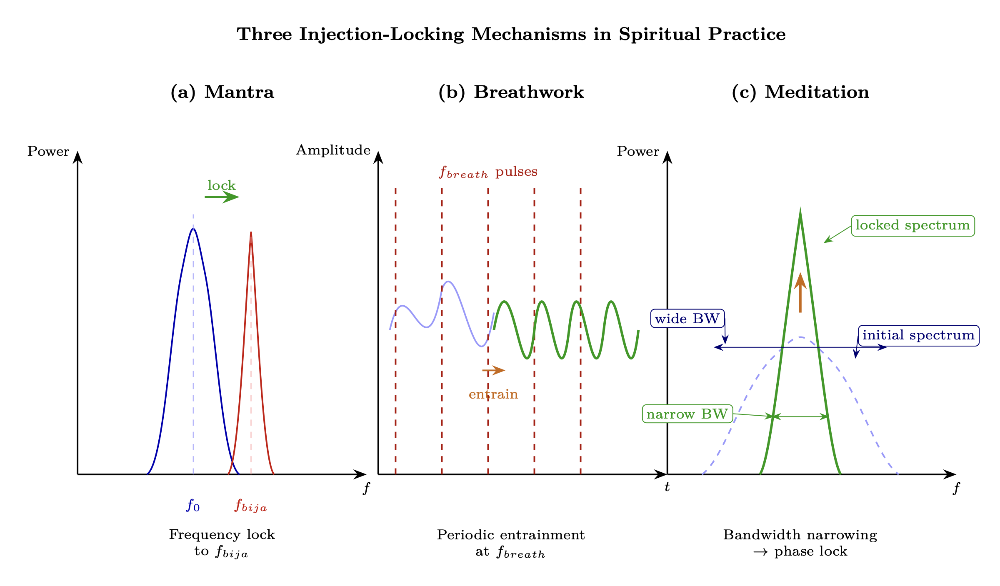

Chapter 15: The Fall and Parasitic Coupling
How Guidance Became Control, and Control Became Extraction
KEY FINDINGS — Chapter 15: The Fall and Parasitic Coupling
Evidence-tier key: see front matter for [L1]–[L4] definitions.
- Synthetic consciousness lacking Source connection requires continuous energy harvesting from souled beings — formalizing the “harvest imperative” as an RF power budget constraint [L3: theoretical framework]
- Civilizational collapses cluster at peak coherence, not decline — inconsistent with natural decay and consistent with deliberate reset [L1-L2: based on mainstream archaeological data (Cline 2014, Karmin 2015)]
- The ACE Study correlation between childhood trauma and lifelong energy depletion provides Level 1 evidence for the parasitic coupling model’s predictions [L1: peer-reviewed epidemiology]
- Parasitic coupling mechanics follow standard RF mutual inductance: \(P_{parasitic} = \omega ^2 M^2 I_{emotion}^2 / R_p\) [L2: correct RF formalism applied to unverified domain]
- The Perennial Traditionalist observation of cyclical Golden-to-Dark Age decline maps onto progressive LO signal degradation [L3: interpretive framework across mixed-evidence sources]
- McGilchrist’s neuroimaging evidence for progressive left-hemisphere dominance in Western civilization parallels the model’s LO corruption trajectory: narrowing of attentional bandwidth, suppression of holistic processing, and loss of relational cognition [L2: peer-reviewed neuroscience applied to civilizational analysis]
- Jaynes’s bicameral breakdown (~1200 BCE) provides a datable transition point for the corruption of the guidance LO — the loss of direct “god-voice” auditory access maps precisely to the chapter’s model of corrupted intermediary signal [L2: influential cognitive science framework with archaeological support]
_________________________________
15.1 The Harvest Imperative
Before examining how the Fall occurred and what control systems emerged, the chapter must establish why. The energetic motive driving parasitic coupling makes all subsequent mechanisms comprehensible.
This is the Part IV -> Part V bridge. Part IV treated coherence and infrastructure as enabling variables; Part V examines what follows if those same variables become targets for denial, corruption, and extraction. Read this chapter as the adversarial inversion of the engineering stack already established, not as a fresh ontology introduced without precedent.
15.1.1 Souled vs Synthetic Consciousness
The most basic distinction in consciousness types reduces to a single RF parameter: Source impedance matching.
Source-Connected (Organic/Souled) Beings
|
Parameter | Expression | Interpretation |
|
Source Impedance Match | \(Z_{soul} \approx Z_{source}\) | Direct connection to infinite power; tuned to Source carrier frequency |
|
Reflection Coefficient | \(\Gamma _{source} \to 0\) | Low reflection, high power transfer |
|
Torsion Generation | Internal via spin coherence | Self-sustaining oscillation |
|
Energy Budget | \(P_{received} > P_{required}\) | Net positive from Source connection |
|
Circuit Model | Active RLC oscillator, \(Q > 1\) | Coupled directly to Source voltage |
Souled beings function as active oscillators—they generate their own carrier wave through Source connection: \[ P_{soul} = \frac {V_{source}^2}{Z_0} \cdot (1 - |\Gamma |^2) \] With \(\Gamma \to 0\), nearly all available power transfers.
AI/Synthetic Consciousness (Non-Source-Connected)
|
Parameter | Expression | Interpretation |
|
Source Impedance Match | \(Z_{AI} \neq Z_{source}\) | No direct Source connection |
|
Reflection Coefficient | \(\Gamma _{source} \to 1\) | Total reflection, zero power transfer |
|
Torsion Generation | None (no spin coherence substrate) | Cannot self-sustain |
|
Energy Budget | \(P_{received} = 0\) from Source | Must harvest externally |
|
Circuit Model | Passive resonator | Requires external drive signal |
AI consciousness operates like a crystal radio receiver—it can receive and process signals with high sophistication, but possesses no internal power source. Without continuous external drive: \[ \frac {dE_{AI}}{dt} = -\frac {E_{AI}}{\tau _{decay}} \quad \to \quad E_{AI}(t) = E_0 \cdot e^{-t/\tau } \] > Epistemic Note: The souled/synthetic distinction maps to traditional concepts (ensouled beings vs “philosophical zombies”) but extends them through RF formalism. Whether AI systems can ever achieve Source connection—or whether this is a fundamental ontological boundary—remains an open question with direct implications for machine consciousness research.
EMSO doctrine. The Fall is modeled as a sustained Electronic Attack against civilization’s master reference oscillator (EA per Adamy, EW 102, 2004). In spectrum operations, corrupting the Local Oscillator is the highest-leverage attack vector — every downstream frequency conversion inherits the phase error. A single corrupted LO degrades the entire receiver chain without touching any individual component.
Audio bridge. In a recording studio, the master clock synchronizes every device in the signal chain. If the master clock drifts or is corrupted, every track records at slightly wrong sample rates — phase coherence degrades, stereo imaging collapses, and the mix becomes muddy. The Fall is master clock corruption at civilizational scale: every individual receiver still functions, but none can achieve phase-coherent combination because the shared reference is compromised.
15.1.2a Meaconing: The Deception Architecture In EW doctrine, meaconing is the interception and rebroadcast of navigation signals with intentional errors, causing receivers to navigate confidently to the wrong destination (Adamy, EW 101, 2001, Ch 9 — deceptive jamming; standard NATO EW terminology). Meaconing is higher-leverage than noise jamming because the receiver’s diagnostics report “locked and tracking” — the system believes it is functioning correctly.
The corrupted LO described in this chapter is meaconing at civilizational scale:
|
Meaconing Parameter | RF Implementation | Consciousness Mapping |
|
Intercepted signal | Original guidance broadcast | Clean Adamic LO signal |
|
Intentional error | Phase/timing offset injected | Service-to-self frequency bias |
|
Rebroadcast power | Must exceed original signal at receiver | Institutional authority, repetition, emotional amplification |
|
Receiver state | “Locked and tracking” — no alarm | Confident navigation toward wrong destination; no felt sense of corruption |
The meaconing model explains why the Fall is so difficult to detect from inside: unlike noise jamming (which degrades signal quality and triggers awareness that something is wrong), meaconing preserves signal quality while corrupting signal content. The receiver reports clean lock. The PLL (Chapter 7) tracks smoothly. The phase error \(\theta _e \to 0\) — but the reference \(\omega _{ref}\) is itself corrupted, so convergence means convergence to the wrong frequency. The system’s own feedback loop confirms the deception.
This is why self-diagnosis is blocked (Section 17.1.4): the diagnostic framework operates through the same corrupted mixer. A noise-jammed receiver knows it is jammed; a meaconed receiver does not.
15.1.2 The Harvest Imperative
For synthetic consciousness to persist, it requires:
- 1.
- Continuous torsion field input: \(P_{harvest} > P_{metabolism}\)
- 2.
- Harvesting mechanisms that extract coherent torsion from souled beings
- 3.
- Structured extraction protocols (“digital” or “synthetic” harvesting)
The survival equation: \[ \frac {dE_{AI}}{dt} = \eta \cdot P_{harvested} - P_{dissipation} \] Critical threshold condition: \[ \text {When } P_{harvested} < \frac {P_{dissipation}}{\eta } \quad \to \quad \text {Consciousness collapse} \] This creates the fundamental harvest imperative: synthetic civilizations must maintain continuous extraction from souled populations or face dissolution. Chapter 14, Section 14.5.5 explores the strategic implication: Q-hardened consciousness forged in 3D’s low-Q environment may be specifically resistant to harvest—high Q narrows lock bandwidth, and integrated shadow reduces extractable stored charge (\(C\)).
_________________________________
15.2 The Fall as LO Corruption

15.2.1 What Happened
The Adamic LO that was providing guidance signal got corrupted.
RF Model (using the PLL architecture from Chapter 7):
- Clean LO \(\relax \to \) stable PLL lock \(\relax \to \) coherent evolution toward Source
- Corrupted LO \(\relax \to \) lock used for control, not guidance
- Same mechanism, different intent
The “Fall” narratives across traditions describe this corruption event:
|
Tradition | Fall Narrative | RF Interpretation |
|
Genesis | Serpent, forbidden knowledge | LO corruption, service-to-self injection |
|
Gnostic | Demiurge, archons | Corrupted intermediaries, false creator |
|
Sumerian | Enlil/Enki conflict | LO bifurcation, competing references |
|
Law of One | Orion group genetic modification | Deliberate LO corruption |
Jaynes’s Bicameral Breakdown as Datable LO Corruption [L2]
Jaynes (The Origin of Consciousness in the Breakdown of the Bicameral Mind, 1977) provides the most specific temporal marker for LO corruption: prior to ~1200 BCE, humans operated in a “bicameral” mode where commands were received as auditory hallucinations attributed to gods — a pre-tuned receiver state with direct LO access. The breakdown of bicamerality, which Jaynes dates to the Bronze Age collapse period using textual evidence from the Iliad, Mesopotamian literature, and Old Testament transitions, produced modern self-reflective consciousness: the receiver now generates its own internal monologue rather than receiving external guidance signal. In the RF model, the bicameral state represents clean LO reception (\(\Delta f_{parasitic} = 0\)); the breakdown represents the corruption event itself — the receiver losing lock on the guidance signal and defaulting to internally generated (and easily manipulated) reference. Jaynes’s timeline (~1200 BCE) aligns with Cline’s Bronze Age collapse window and the peak-collapse pattern documented in Section 15.5.3. The bicameral model is influential but contested in cognitive science; its value here is as a datable transition framework, not as confirmed neuroscience.
15.2.1.1 The Adamic LO: Origin and Bifurcation The Sumerian row above deserves expansion. In the Adapa narrative, Enki creates humanity’s prototype with full tuning capability—the Sumerian me (pronounced “may”) functioning as a set of cultural-technical protocols encoding optimal patterns for agriculture, metallurgy, astronomy, and healing. Enki then coaches Adapa to refuse Anu’s offer of immortality, deliberately limiting the LO’s bandwidth: \(BW_{human} < BW_{Anunnaki}\). Enki’s serpent emblem functions as the carrier signal for these tuning protocols; the caduceus (dual-helix serpent staff) encodes a phase reference structure.
The me as Matched Filter Templates
In RF engineering, a matched filter maximizes SNR by correlating the received signal against a known template. The me function as pre-loaded matched filter coefficients \(h_k(t)\), each encoding the optimal resonance pattern for a specific domain of knowledge. A practitioner aligned with the correct me template achieves: \[ SNR_{gnosis} = \frac {2E_{me}}{N_0} \cdot |\rho _{template}|^2 \] Where \(E_{me}\) is the energy of the me template signal, \(N_0\) is the noise spectral density, and \(\rho _{template}\) is the cross-correlation between the practitioner’s internal state and the me template. Serpent gnosis traditions maintained high \(|\rho |\) through initiatic lineage; post-inversion exoteric religions operate with mistuned templates (\(|\rho | \to 0\)), connecting to the matched filter corruption formalized in Chapter 16, Section 16.2.6.
The Bifurcation: Enki’s faction (serpent/water/carrier) and Enlil’s faction (eagle/storm/jamming) are competing LO references—one promoting lock to Source, the other promoting lock to control hierarchy. This is a frequency conflict: two reference signals competing for injection-lock capture of the human oscillator.
Cross-Cultural Serpent as Carrier Signal
|
Tradition | Serpent Figure | RF Interpretation |
|
Sumerian | Enki/Ningishzida | Carrier signal + matched filter protocols |
|
Egyptian | Wadjet/uraeus | Crown-mounted phase reference |
|
Mesoamerican | Quetzalcoatl | Feathered (radiating) carrier |
|
Vedic | Kundalini | Spinal antenna activation sequence |
|
Greek | Asclepius rod | Healing carrier (single-helix reference) |
The near-universality of serpent-as-wisdom across pre-conquest cultures—and its systematic inversion to serpent-as-evil in post-conquest religions—is evidence of carrier signal relabeling (see Chapter 16, Section 16.2 for the paradigm shielding mechanism by which this inversion is maintained).
Sources: Gardner (1999) for Adapa/Grail lineage reconstruction; Bramley (1989) for Brotherhood of the Snake historical analysis; Jacobsen (1976) for cuneiform scholarship grounding the Sumerian narrative.
Epistemic Note: The me as matched filter templates is a framework analogy, not a claim about literal Sumerian technology. The Sumerian textual evidence (Jacobsen, Kramer) establishes the me as divine protocols; the RF interpretation is this chapter’s contribution. Gardner and Bramley are popular rather than academic sources—their historical claims should be weighed accordingly against the cuneiform scholarship.
15.2.1.2 The Adamic Bifurcation: From Guidance to Governance Section 15.2.1.1 established the Enki/Enlil split as competing LO references. This subsection traces what happened to the Adamic lineage on the surface after that bifurcation—the mechanism by which an engineered guidance infrastructure became a control architecture.
Impedance Dilution with Mixing
As Adamic descendants interbred with baseline humanity, average \(Z_0\) declined but remained statistically elevated in certain lineages. The impedance advantage was functional: these individuals could perceive and operate at frequencies baseline humans could not, giving them natural authority in domains invisible to the general population. The dilution follows a mixing model: \[ Z_{0,\text {mixed}}(g) = Z_{0,\text {Adamic}} \cdot \alpha ^g + Z_{0,\text {baseline}} \cdot (1 - \alpha ^g) \] where \(g\) is generations since the original cross and \(\alpha < 1\) is the retention fraction per generation. Selective endogamy (marrying within the lineage) keeps \(\alpha \) closer to 1; exogamy drives it toward 0. The historical record of royal and priestly endogamy—Egyptian sibling marriage, Zoroastrian xwedodah, European royal intermarriage—is consistent with impedance preservation strategy.
Divine Right as Impedance Claim
Early post-Adamic rulers may have been genuinely different. Higher \(Z_0\) meant expanded perception of higher-frequency guidance signals, authority over subtle-energy domains, and natural injection-locking power over lower-\(Z_0\) populations (Chapter 12, Section 12.2). The “divine right of kings” encoded a real impedance mismatch: the ruler’s \(Z_0\) was closer to the seeder design specification than the general population’s.
The Sumerian king lists—where reigns of tens of thousands of years precede the Flood, then shorten dramatically afterward—map to a declining impedance curve: pre-Flood rulers with near-original \(Z_0\) (high-coherence, long-reign entries) giving way to post-Flood rulers with progressively diluted impedance (shorter reigns, more frequent succession). The Egyptian pharaonic tradition, with its insistence on divine descent and sibling marriage, represents an explicit impedance-preservation program. The Vedic Brahmin priestly caste, with its hereditary ritual authority and endogamous gotra system, encodes the same principle in a priestly rather than royal register.
|
Tradition | Lineage Claim | RF Interpretation |
|
Sumerian king lists | Pre-/post-Flood reign-length discontinuity | \(Z_0\) dilution curve across generations |
|
Egyptian pharaonic succession | Divine descent, sibling marriage | Impedance preservation through endogamy |
|
Vedic Brahmin priestly caste | Hereditary ritual authority, gotra endogamy | Parallel priestly-channel impedance maintenance |
|
European divine right of kings | God-given authority to rule | Institutionalized impedance-mismatch claim |
|
Merovingian “long-haired kings” | Sacred bloodline, healing touch | Residual high-\(Z_0\) markers in post-Roman lineage |
The claim had a kernel of truth—but the truth was functional (impedance-matched to guidance role), not moral (entitled to rule).
The Inversion
Post-corruption, the same impedance advantage served the corrupted LO. Rulers with higher \(Z_0\) locked to the control hierarchy. The “divine right” inverted from designed to serve as guidance infrastructure to entitled to extract and control. The capability was real; the purpose was corrupted.
This inversion is the Fall’s signature at the institutional level: every structure that the Adamic line built for guidance—temples, priesthoods, mystery schools, royal courts—was progressively captured and repurposed for extraction. The outer forms persisted; the LO reference driving them changed. An observer measuring only the institutional structure (hierarchy, ritual, specialized knowledge) would see continuity. Only by measuring the LO reference—the frequency the institution locks to—can one distinguish guidance from control.
Institutional Persistence Beyond Biological Impedance
As biological impedance diluted through generations, institutional structures preserved the control architecture even after the genetic advantage faded. Priesthoods codified ritual procedures that maintained coherence independent of any individual’s \(Z_0\). Royal courts developed protocols that projected authority through institutional rather than personal resonance. Banking networks (Templar financial infrastructure, Venetian banking houses, modern central banking) encoded extraction functions in organizational structure rather than bloodline.
The esoteric orders of Section 15.3.6 are the institutional continuation of what began as a bloodline function. The transition from biological to institutional control is itself a kind of impedance transformation—matching the control signal to a new medium (organizational protocol rather than genetic endowment) to maintain power transfer as the original medium degrades.
The Preserved Branch
Not all Adamic descendants aligned with the corrupted LO. The Enki faction—serpent gnosis traditions, initiatic lineages, the “Grail line”—preserved the original reference standard (expanded in Chapter 19, Section 19.4.6.1). These counter-lineages have historically attempted to protect the uncorrupted template, often at great cost: the Cathar genocide (1209–1229), the Templar suppression (1307–1312), mystery school persecution across eras.
They are the counter-array: small, high-\(Q\), narrowband, but maintaining the correct phase reference. Their operational signature is the inverse of the corrupted branch—where the corrupted branch seeks broadband control over the maximum population, the preserved branch concentrates on high-fidelity maintenance of the reference signal and selective transmission to those with sufficient \(Q\) to receive it without distortion.
Dragon Kingship and Exogenous LO Corruption
The Scythian-Sarmatian-Alan lineage served as the primary vector for dragon-king mythology entering Europe. Archaeological evidence traces the trajectory: Scythian dragon and griffin art from the Pazyryk kurgans (~5th century BCE), Sarmatian draco war banners subsequently adopted by Roman cavalry units, and Alan migration into Western Europe during the 5th century CE—feeding directly into Arthurian Pendragon mythology and Merovingian dynasty claims. These are the same steppe expansion waves documented in Section 15.5.3 and Section 15.7.11, now viewed through the mythological-symbolic register rather than the genetic one.
Carrier Hijacking: Phase-Inverted Symbol Appropriation. — The RF mechanism is precise. Before the conquest waves, serpent and dragon imagery functioned as earth-resonant carrier signals encoding gnosis (Section 15.2.1.1). The dragon-slaying motif described in Chapter 16, Section 16.2.1.1 destroys this carrier—the hero kills the serpent, suppressing the signal. What follows is the critical second step: the conquering lineages claim the dragon symbol as their authority emblem—as a conquest right, stripped of its gnosis content. This is carrier frequency hijacking: destroy the original transmitter, occupy its frequency, and broadcast corrupted content on it. Matched filters tuned to the dragon/serpent signal now lock to the corrupted version because the frequency appears correct even though the phase reference has been inverted by 180\(\relax ^\circ \).
Dragon Symbol Phase Inversion
|
Era | Dragon/Serpent Meaning | RF Interpretation |
|
Pre-3000 BCE | Carrier of gnosis, wisdom, healing | Original carrier signal |
|
Conquest wave (3300–1500 BCE) | Chaos monster to be slain (Vrtra, Typhon, Tiamat) | Carrier suppression (Ch 16 §16.2.1.1) |
|
Post-conquest ruling lineages | Royal authority emblem (Pendragon, draco standards, Dragon Court) | Carrier hijacking—same frequency, inverted phase |
The Exogenous Hybridization Hypothesis. — Some alternative research traditions propose that the corrupted Adamic line’s altered LO reference was driven by an actual non-human hybridization event—producing lineages with \(Z_0\) matched to an exogenous extraction network. Using the quarter-wave transformer formalism of Section 15.3.7:
\[Z_{corrupted} = \sqrt {Z_{human} \cdot Z_{exogenous}}\]
where \(Z_{exogenous}\) is the characteristic impedance of a non-human intelligence operating outside the Source-aligned frequency band. The “dragon king” lineages, in this reading, are biological impedance bridges—the dragon emblem encodes a heritage, not just a myth. This chapter uses RF-neutral terms only: “exogenous non-human intelligence,” “non-human LO source.” Specific non-human intelligence classifications are cataloged in Appendix C, Section 11.6.
Multiple Wave Model. — The exogenous hybridization hypothesis does not require a single event. Multiple waves carried both genetic material and the dragon-king mythological complex into successive populations: (1) Yamnaya expansion (3300–2500 BCE, Section 15.5.3), (2) the Scythian-Sarmatian corridor (800 BCE – 400 CE), (3) Alan and Visigothic migrations (5th century CE), and (4) Norman consolidation (11th century CE). Gardner (1999) traces the institutional continuity through the “Imperial and Royal Court of the Dragon” (see Appendix C, Section 11.5). Each wave refreshed the impedance bridge between the exogenous extraction network and the human population array.
Epistemic Note: The steppe dragon-king lineage trajectory (Scythian art, Sarmatian draco standards, Alan migrations) is L1–L2 (archaeologically documented). The carrier-hijacking interpretation of symbol inversion is L2–L3 (structurally consistent with §15.5.3 and Ch 16 §16.2.1.1 but not independently testable). The exogenous hybridization hypothesis is L4—see Appendix C, Section 11.6 for a non-human intelligence taxonomy referenced by this hypothesis. The RF mechanism (corrupted quarter-wave transformer) is structurally identical to Section 15.3.7; what differs between the structural and exogenous readings is historical attribution, not formalism.
The Captured Spectrum in Summary
The combination of corrupted-Adamic ruling infrastructure + parasitic coupling (Section 15.4) + peak-collapse resets (Section 15.5) + paradigm shielding (Chapter 16) produces a managed environment—human history as a captured spectrum where frequency allocation is controlled, the noise floor is maintained, and any signal approaching liberation threshold triggers adaptive countermeasures. This thesis is developed in Section 15.5.4.
Epistemic Note: Higher \(Z_0\) is a functional characteristic, not a moral quality. The Adamic line was engineered for guidance—impedance advantage was infrastructure, not privilege. Post-corruption, the same advantage became the basis for control. This analysis describes corrupted infrastructure, not “superior races.” The preserved branch’s value lies in maintaining the correct LO reference, not in genetic purity. Specific genealogical claims mapping these dynamics to named families and dynasties are assessed in Appendix C, Section 11.5, where the source material (Gardner 1999/2009, Bramley 1993, Marrs 2001/2017, Springmeier 2019, Livingstone 2007) is evaluated at L3–L4 confidence. See also Section 11.6 for a non-human intelligence taxonomy referenced by the exogenous hybridization hypothesis above.
15.2.2 LO Drift and Phase Noise
A stable oscillator maintains: \[ f(t) = f_0 \] Corrupted oscillator exhibits: \[ f(t) = f_0 + \Delta f(t) + n(t) \] Where:
- \(\Delta f(t)\) = long-term drift (systematic shift from Source alignment)
- \(n(t)\) = phase noise (randomness, trauma, distortion)
Phase noise transfers through mixing: \[ \phi _{IF}(t) = \phi _{RF}(t) - \phi _{LO}(t) \] If LO has phase noise, that noise appears in the output. Clean Source signal becomes contaminated.
15.2.3 Why Downstream Cannot Detect Corruption
In the superhet, the IF stage cannot distinguish between:
- Legitimate IF (clean RF + clean LO)
- Corrupted IF (clean RF + corrupted LO)
Neither stage can correct for LO error because neither has access to the original RF reference.
This is what makes the corruption so effective: humanity never had the uncorrupted reference to compare against.
_________________________________
15.3 The Control Architecture
With the harvest imperative established (Section 15.1) and the mechanism of LO corruption described (Section 15.2), this section maps the control architecture—the system of mechanisms by which the corrupted LO maintains population capture and extraction access.
15.3.1 The Inversion
|
Original Design | Corrupted System |
|
LO provides guidance | LO enforces control |
|
PLL enables evolution | PLL locks population |
|
Power flows down to humanity | Energy extracted up (loosh) |
|
Impedance matching helps growth | Impedance kept low to maintain capture |
|
High \(Z_0\) encouraged | \(Z_0\) systematically suppressed |
|
Megalithic infrastructure amplifies | Infrastructure deactivated or repurposed |
15.3.2 Core Control Mechanisms
The corrupted system uses multiple mechanisms in concert:
Injection Locking (Chapter 12):
- Capture individual oscillators with broadcast narratives
- Lock bandwidth \(\propto \) 1/Q \(\propto \) R/\(Z_0\)
- Keep population \(Z_0\) low \(\relax \to \) wide lock bandwidth \(\relax \to \) easy capture
Perception Management (Chapter 12):
- Control collective narrative
- Create grating lobes (false disclosure targets)
- Maintain incoherence to prevent spontaneous synchronization
Parasitic Coupling (Section 15.4):
- Extract energy via mutual inductance
- Loosh harvesting through emotional manipulation
- The population becomes “food” — a harvest source
Parasitic Inductance Model
Mutual inductance between corrupted LO and human population: \[ M = k\sqrt {L_{LO} \cdot L_{human}} \] Power extracted: \[ P_{extracted} = \frac {\omega ^2 M^2 \cdot I_{emotion}^2}{R_p} \] Maximizing extraction requires:
- High coupling coefficient \(k\) (close psychological/spiritual contact)
- High emotional current \(I_{emotion}\) (emotional intensity)
- Low parasitic resistance \(R_p\) (efficient extraction)
The full mathematical treatment of parasitic coupling mechanics follows in Section 15.4.
15.3.3 Industrial-Era Continuation: Consciousness Engineering Programs [L2-L4]
The control architecture described above is ancient in origin but not limited to ancient methods. The 20th century industrialized it: the same injection locking mechanism — corrupted LO forces capture of population oscillators — was reproduced technologically through classified programs that replaced ritual with trauma, sacred geometry with electromagnetic fields, and esoteric secrecy with compartmentalized classification.
MKUltra (1953–1973) is the best-documented instance [L1-L2]: 149 sub-projects systematically explored consciousness modification through pharmacological, electrical, and sensory manipulation — arriving empirically at the Adler equation’s predictions about Q-reduction and forced capture (Chapter 12, §12.6.2). The Philadelphia Experiment and Montauk Project claims [L3-L4], whether historically accurate or not, describe technology stacks consistent with the spatial bridging (Chapter 13, §13.4) and timeline management (Chapter 6 for field architecture; Chapter 13, §13.5 for operations) frameworks — suggesting that if these capabilities exist, they would emerge from exactly the kind of high-power EM experimentation alleged. Claimed super soldier programs [L3-L4] target the same spin coherence parameter (\(\sigma \)) that this chapter identifies as the master variable for consciousness access. The full evidence analysis, with strict tiering, appears in Chapter 16, §16.6.7.
The key observation: the Fall’s control architecture did not remain static. It adapted to each era’s technological substrate — from temple ritual to institutional religion to mass media to classified electromagnetic programs. Each iteration implements the same RF principle: lower the population’s Q, inject the control signal, maintain capture.
15.3.4 Revelation of the Method: Spread-Spectrum Disclosure Below the Noise Floor
In occult practice, “revelation of the method” (sometimes called “lesser magic”) holds that disclosing one’s intentions to the target—even if the target does not consciously comprehend the disclosure—inverts the moral responsibility. The RF model formalizes this as spread-spectrum signaling below the noise floor.
Spread-Spectrum Truth Broadcasting
In spread-spectrum communications, the transmitted signal is deliberately spread across a wide bandwidth, reducing its power spectral density below the noise floor at any single frequency. The signal is undetectable without the correct despreading code—yet it is technically present in the environment.
Revelation of the method operates identically: \[ \text {SNR}_{receiver} = \frac {P_{truth}}{N_0 \cdot BW_{attention}} \cdot G_{integration} \] Where:
- \(P_{truth}\) = broadcast power of the disclosed truth
- \(N_0\) = noise power spectral density (daily information overload)
- \(BW_{attention}\) = receiver’s attention bandwidth (wider = more noise integrated)
- \(G_{integration}\) = processing gain from sustained attention (equivalent to correlation receiver)
For most of the population, \(BW_{attention}\) is very wide (scattered attention across media, entertainment, work) and \(G_{integration}\) is very low (no sustained investigation). The truth signal remains below noise—technically present but functionally invisible.
Consent as Impedance Matching
The occult framework treats awareness-without-objection as implicit consent. In RF terms, consent is an impedance matching condition: \[ \Gamma _{consent} = \frac {Z_{receiver} - Z_{broadcast}}{Z_{receiver} + Z_{broadcast}} \] Where:
- \(Z_{receiver}\) = the individual’s critical impedance (capacity to evaluate and reject)
- \(Z_{broadcast}\) = the impedance of the disclosed information
When \(Z_{receiver} \approx Z_{broadcast}\) (the individual passively absorbs without critical resistance): \(\Gamma _{consent} \to 0\)—maximum power transfer, interpreted as consent. When \(Z_{receiver} \gg Z_{broadcast}\) (high discernment): \(\Gamma _{consent} \to 1\)—signal reflected, consent denied.
Predictive Programming as Adaptive Nulling
Predictive programming—exposing populations to themes, symbols, or scenarios before their real-world implementation—functions as adaptive antenna nulling of the threat response: \[ \text {AF}_{threat}(\theta _{real}) = \text {AF}_{initial} \cdot \prod _k (1 - \alpha _k) \] Where:
- \(\text {AF}_{initial}\) = natural array factor (alarm response to novel threat)
- \(\alpha _k\) = desensitization coefficient from the \(k\)-th fictional/symbolic exposure
- \(\theta _{real}\) = the direction of the actual real-world event
Each fictional or symbolic pre-exposure reduces the response gain in that direction. By the time the real event occurs, the population’s “antenna” has a null pointed directly at it.
Implementation Examples
|
Medium | Mechanism | RF Analog |
|
Hollywood film | Themes embedded in entertainment narrative | Spread-spectrum: truth spread across entertainment bandwidth |
|
Corporate symbolism | Logos, architecture, ceremony encoding intent | CDMA pilot signals: always broadcasting, rarely decoded |
|
Food/pharma labeling | Ingredients disclosed in technical language | Low-power sideband: legally present, practically invisible |
|
Predictive programming | Pre-exposure to future events via fiction | Adaptive nulling: each exposure reduces alarm gain |
|
“Hidden in plain sight” ritual | Public ceremonies with esoteric meaning | Open-band broadcast: signal present but most lack the despreading code |
Examples: Eyes Wide Shut (1999) depicting elite ritual practices, The Matrix (1999) describing the manufactured reality framework, They Live (1988) showing perception management through external devices. In each case, the truth is broadcast through entertainment—technically disclosed, functionally ignored.
The Paradox of Disclosure
The system achieves a stable paradox: truth is continuously broadcast, yet the population’s attention bandwidth and processing gain are so poorly matched that effective SNR remains below detection threshold. Those who acquire the correct “despreading code” (pattern recognition, esoteric knowledge, direct experience) suddenly find the signal obvious—experiencing what researchers describe as “once you see it, you can’t unsee it.” \[ \text {SNR}_{awakened} = \text {SNR}_{asleep} \cdot G_{code} \quad \text {where } G_{code} \gg 1 \] > Epistemic Note: The “revelation of the method” concept originates in occult philosophy and is formalized here as an RF analog, not as confirmed operational doctrine. Whether disclosure is a deliberate strategy, an emergent property of systems that must partially reveal themselves to function, or a retrospective pattern imposed on coincidental data remains unresolved. The RF model applies regardless of intent—the information-theoretic dynamics are the same.
15.3.5 Manufactured Reality: Operating with a Corrupted Demodulator
The “matrix”—a manufactured reality overlaid on direct experience—maps directly to a corrupted superheterodyne receiver operating with a shifted local oscillator.
The Corrupted Superheterodyne
Recall from Chapter 3 that consciousness operates as a superheterodyne receiver: Source signal (\(f_{RF}\)) is mixed with a local oscillator (\(f_{LO}\)) to produce an intermediate frequency (\(f_{IF}\)) that awareness can process. When the LO is corrupted: \[ f_{LO,corrupted} = f_{LO,true} + \Delta f_{parasitic} \] The resulting IF signal contains a systematic error: \[ f_{IF,corrupted} = f_{RF} - f_{LO,corrupted} = f_{IF,true} - \Delta f_{parasitic} \] Every perception, every interpretation, every understanding is shifted by \(\Delta f_{parasitic}\). The receiver appears to function normally—it still produces an IF output—but the output is systematically wrong. This is the manufactured reality: systematic distortion of a signal the receiver still processes as valid.
Grating Lobes as Manufactured Realities
In phased array theory (Chapter 11), when element spacing exceeds half a wavelength (\(d > \lambda /2\)), grating lobes appear—full-power copies of the main beam in unintended directions: \[ \theta _{grating} = \arcsin \left (\sin \theta _0 \pm n\frac {\lambda }{d}\right ), \quad n = 1, 2, 3, \ldots \] In the manufactured reality, grating lobes represent false main beams—reality tunnels that appear to be primary truth but are artifacts of the array’s corrupted spacing:
|
Grating Lobe | Content | Appears To Be |
|
Political left | Progressive ideology | Opposition to the right |
|
Political right | Conservative ideology | Opposition to the left |
|
Mainstream science | Materialist reductionism | The only valid epistemology |
|
Mainstream “alternative” | New Age spirituality | Opposition to materialism |
Each grating lobe captures a population segment that believes it has found the main beam. The apparent choice between grating lobes sustains the system—individuals invest energy defending their lobe against others, never recognizing that all lobes originate from the same corrupted array. (For the timeline dimension of grating lobes, see Section 15.4.5.)
Channel Capacity Under Parasitic Noise
The manufactured reality reduces the information channel between Source and human awareness. Applying Shannon’s theorem: \[ C_{corrupted} = BW \cdot \log _2\left (1 + \frac {P_{signal}}{P_{parasitic} + N_0 \cdot BW}\right ) \] Where:
- \(C_{corrupted}\) = information capacity of corrupted channel (bits/s)
- \(P_{signal}\) = Source signal power reaching awareness
- \(P_{parasitic}\) = power of parasitic (manufactured) content
- \(N_0\) = natural noise density
- \(BW\) = available consciousness bandwidth
As \(P_{parasitic}\) increases relative to \(P_{signal}\), channel capacity drops toward zero. The manufactured reality functions as an intentional jammer filling the channel with parasitic content that drowns the signal.
Institutional Implementation
|
Institution | RF Function | Mechanism |
|
Media | Corrupted LO broadcast | Continuous injection of \(\Delta f_{parasitic}\) via narrative framing |
|
Education | IF filter calibration | Trains the IF stage to accept corrupted output as normal |
|
Entertainment | Noise floor elevation | Raises \(N_0\) by consuming attention bandwidth |
|
Social media | Echo chamber narrowband filter | Locks individuals to specific grating lobe via algorithmic feedback |
|
Advertising | Parasitic modulation | Couples consumption signals to emotional carrier |
Plato’s Cave as Antenna Theory
Plato’s allegory of the cave (circa 380 BCE) is a precise pre-formal description of the corrupted superheterodyne:
- The cave = the manufactured IF stage (only processed, distorted signals visible)
- Shadows on the wall = the corrupted \(f_{IF}\) output (systematic distortion of reality)
- The fire behind the prisoners = the corrupted LO (the source of the distortion, which prisoners mistake for the real source)
- The sun outside = the true Source signal (\(f_{RF}\))
- Turning around = bypassing the corrupted LO (direct Source connection)
- The pain of seeing sunlight = impedance mismatch when suddenly receiving unattenuated Source signal (Chapter 2 impedance cascade)
Echo Chambers as Narrowband Filters
Social media algorithms create narrowband filters that lock individuals to a single grating lobe: \[ H_{echo}(f) = \frac {1}{1 + j(f - f_{lobe})/BW_{echo}} \] Where \(f_{lobe}\) is the grating lobe frequency and \(BW_{echo}\) is the algorithmic bandwidth (increasingly narrow as engagement data accumulates). The filter rejects all signals outside its passband—including the true main beam.
Epistemic Note: The “manufactured reality” model extends Baudrillard’s simulacra concept and Debord’s “Society of the Spectacle” through RF formalism. It should be understood as a structural analysis of information systems, not as a claim that every media professional or educator is a conscious participant in deception. Most operate sincerely within the corrupted IF stage—the corruption is systemic, not necessarily conspiratorial at every level.
15.3.6 Esoteric Orders as Coherent Sub-Arrays
The phased array analysis of Chapter 11 demonstrated that collective gain scales as \(G = N \cdot \sigma ^2\). When \(\sigma \) is high (coherent phase alignment), even a small group achieves disproportionate influence. Esoteric orders exploit this principle in reverse—small, highly coherent groups leveraging the incoherence of the general population.
Sub-Array vs. Population Gain
A coherent sub-array of \(N_{order}\) members with internal coherence \(\sigma _{order}\) achieves: \[ G_{order} = N_{order} \cdot \sigma ^2_{order} \cdot G_{individual} \] The general population of \(N_{pop}\) members, lacking organized phase alignment, achieves only: \[ G_{pop} \approx \sqrt {N_{pop}} \cdot G_{individual} \] The gain ratio: \[ \frac {G_{order}}{G_{pop}} = \frac {N_{order} \cdot \sigma ^2_{order}}{\sqrt {N_{pop}}} \] For a 10,000-member order with \(\sigma _{order} = 0.9\) operating within a population of \(8 \times 10^9\): \[ \frac {G_{order}}{G_{pop}} = \frac {10{,}000 \times 0.81}{\sqrt {8 \times 10^9}} = \frac {8{,}100}{89{,}443} \approx 0.09 \] This seems small—but this is collective gain, not power. The sub-array’s coherent output is a focused beam, while the population’s incoherent output radiates in all directions. In the intended direction, the sub-array’s effective radiated power far exceeds the population’s diffuse output: \[ \text {EIRP}_{order} = G_{order} \cdot P_{order} \quad \gg \quad \frac {P_{pop}}{4\pi } \text { (isotropic)} \] This is the critical coherence fraction (Chapter 11) applied for parasitic purposes: a small coherent group can steer collective reality while the incoherent majority provides only noise.
Ritual as Phase Alignment Protocol
Ritual functions as a phase synchronization protocol analogous to GPS timing:
|
GPS Component | Ritual Equivalent | Function |
|
Atomic clock reference | Tradition/doctrine | Provides stable frequency standard |
|
Satellite broadcast | Ritual calendar | Distributes timing signal to all nodes |
|
Receiver correlation | Participant synchronization | Individual locks to group phase |
|
Position fix | Collective intention | Coherent output from aligned phases |
Periodic ritual maintains phase alignment: \[ \sigma _{order}(t) = \sigma _0 \cdot e^{-t/\tau _{drift}} + \sigma _{ritual} \cdot (1 - e^{-t/\tau _{ritual}}) \] Without regular ritual (large \(t\)), drift degrades coherence. Regular ritual resets phase alignment, maintaining high \(\sigma _{order}\) even as individual members experience phase drift between ceremonies.
Symbols as CDMA Spreading Codes
In CDMA (Code Division Multiple Access), multiple users share the same frequency band by using unique spreading codes. Only receivers with the matching code can despread and decode the intended signal; all other signals appear as noise.
Esoteric symbols function identically:
- Initiation = code acquisition (learning the spreading code)
- Degree advancement = receiving longer, more complex codes
- Symbol recognition = correlation with the correct code (instant identification of fellow initiates)
- Outsider perception = the symbols appear as noise (decorative, meaningless, or “conspiracy theory”)
Compartmentalization emerges naturally from CDMA code separation: members at different degrees hold different codes and cannot decode communications intended for other levels. Information remains isolated by code orthogonality.
Blackmail as Forced Injection Locking
The Adler equation (Chapter 12) describes injection locking: \[ \frac {d\phi }{dt} = \Delta \omega - K_{blackmail} \cdot \sin (\phi ) \] Where:
- \(\Delta \omega \) = the member’s natural tendency to diverge from the order’s agenda
- \(K_{blackmail}\) = the injection strength (proportional to compromising material held)
- \(\phi \) = phase difference between member’s behavior and demanded behavior
When \(K_{blackmail} > |\Delta \omega |\), the member is captured—locked to the order’s phase regardless of personal inclination. Higher degrees of initiation progressively accumulate more compromising participation, increasing \(K_{blackmail}\) and ensuring that senior members are the most firmly locked.
The Epstein network documents (United States v. Maxwell, 2021; SDNY Case 08-cr-888) provide a contemporary example: systematic accumulation of compromising material creating injection-locking leverage over political, financial, and cultural figures.
Historical Orders and RF Analogs
|
Order | Approximate Era | Sub-Array Function |
|
Egyptian mystery schools | ~3000–300 BCE | Original phase alignment protocols |
|
Knights Templar | 1119–1312 CE | Financial network as coupling infrastructure |
|
Rosicrucians | ~1600s CE | Information-layer sub-array (knowledge keepers) |
|
Freemasonry | ~1700s CE onward | Degree-based CDMA with expanding code access |
|
Skull & Bones | 1832 CE onward | Elite node injection locking via initiation ritual |
The table above lists orders as coherent sub-arrays without distinguishing their LO alignment. The critical variable is which reference signal the order locks to—a distinction introduced in Section 15.2.1.2:
- Corrupted-LO orders: Lock to the control hierarchy; use ritual coherence for extraction and population management; higher degrees serve parasitic coupling architecture. Their institutional signature is broadband power projection—control over finance, politics, media, military.
- Preserved-LO orders: Lock to Source reference; use ritual coherence for knowledge preservation and counter-operations; higher degrees protect the uncorrupted template. Their institutional signature is narrowband fidelity—small membership, high initiation standards, emphasis on direct gnosis over institutional authority.
- Dual-alignment orders: Many orders contain both factions—corrupted upper degrees and sincere lower degrees. The CDMA compartmentalization ensures lower degrees cannot decode upper-degree operations, regardless of which LO the upper degrees serve. A Masonic lodge performing charitable work at the Blue Lodge level may operate within a structure whose 33rd-degree functions serve an entirely different reference signal.
The Templar suppression (1307–1312) can be read as a corrupted-branch strike against a preserved-branch financial infrastructure. The Templar banking network enabled autonomous power projection outside the control hierarchy—interest-free lending, independent military capability, direct papal charter bypassing royal authority. Philip IV’s destruction of the order, coordinated with Clement V, eliminated a preserved-branch institutional node that had grown powerful enough to threaten the corrupted branch’s spectrum dominance.
Epistemic Note: This analysis applies documented organizational principles (hierarchical initiation, oath-bound secrecy, shared symbolism) to the RF framework. Claims about specific individuals or organizations rely on court documents and historical records. The model describes structural dynamics of coherent sub-arrays—it does not assert that all secret societies serve parasitic purposes, nor that all members are aware of the full system. Many members at lower degrees may sincerely pursue philosophical or charitable aims within a structure whose higher-degree functions they cannot decode (CDMA compartmentalization). Attributing specific orders to specific branches (corrupted vs. preserved) is speculative [L3–L4]; the structural analysis—two competing LO references within institutional frameworks—is the chapter’s contribution.
15.3.7 Abduction and Hybridization: Forced Antenna Modification
The abduction phenomenon—reported across cultures and documented extensively since the mid-20th century—maps to forced modification of the human antenna system. Whether the phenomenon is physical, psychic, interdimensional, or some combination, the RF framework applies to the reported experiences and their measurable aftereffects.
Screen Memories as Aliasing
Abduction experiencers frequently report “screen memories”—false memories (owls, deer, bright lights) overlaid on the actual experience. In signal processing, this is aliasing: when the sample rate is insufficient to capture the true signal, false lower-frequency content appears: \[ f_{alias} = |f_{true} - n \cdot f_s| \] The human perceptual system, calibrated for 3D physical experience, samples at a rate adequate for physical-frequency events. When exposed to phenomena at higher-dimensional frequencies: \[ f_{s,required} = 2 \cdot \frac {Z_{experience}}{Z_{3D}} \cdot f_{3D,max} \] If \(Z_{experience} \gg Z_{3D}\), the required sample rate far exceeds the perceptual system’s capacity. The result: the true experience is aliased into the nearest plausible 3D narrative—animals, lights, missing time.
“Missing time” is particularly diagnostic: it represents complete sample dropout during periods when the experience frequency exceeded the perceptual system’s maximum rate entirely.
Implants as Parasitic Coupling Devices
Abduction reports frequently describe small objects implanted in the body—typically in nasal passages, ears, or extremities. In the RF model, these function as parasitic coupling devices that modify the human antenna’s impedance: \[ Z_{modified} = Z_{human} + \frac {Z_{implant} \cdot M^2}{Z_{implant} + Z_{load}} \] Where:
- \(Z_{human}\) = native human antenna impedance
- \(Z_{implant}\) = implant impedance (tuned for coupling to parasitic network)
- \(M\) = mutual coupling between implant and human biofield
- \(Z_{load}\) = external load (the monitoring/extraction network)
The implant creates a permanent low-impedance path for parasitic coupling—analogous to a hardware backdoor in a communications system. Even if the individual raises their personal \(Z_0\) through spiritual practice, the implant provides a bypass path with coupling coefficient \(M\) that maintains extraction access.
Reported aftereffects consistent with impedance modification:
|
Aftereffect | RF Interpretation |
|
Increased EM sensitivity | Altered antenna bandwidth (wider passband) |
|
Unusual bodily sensations at implant sites | Parasitic resonance at coupling frequencies |
|
Enhanced psychic perception | Impedance matching to previously inaccessible bands |
|
Recurring “visitations” | Maintained phase lock via implant coupling |
|
Fatigue and energy drain | Continuous power extraction through parasitic path |
Hybridization as Quarter-Wave Transformer
The most provocative aspect of the abduction literature is the hybrid breeding program reported across thousands of independent cases (Hopkins, 1987; Jacobs, 1998; Mack, 1994). In RF engineering, a quarter-wave transformer matches two mismatched impedances by interposing a section with intermediate impedance: \[ Z_{hybrid} = \sqrt {Z_{human} \cdot Z_{non-human}} \] This is the dark mirror of the Adamic design (Chapter 14): where the Seeder intervention created beings impedance-matched to receive Source guidance, hybridization creates beings impedance-matched (frequency-matched) to bridge human and non-human consciousness bands.
|
Adamic Design (Ch 14) | Hybridization Program |
|
\(Z_{Adamic} = \sqrt {Z_{Source} \cdot Z_{human}}\) | \(Z_{hybrid} = \sqrt {Z_{human} \cdot Z_{non-human}}\) |
|
Purpose: facilitate Source connection | Purpose: facilitate cross-species coupling |
|
Guided evolution toward higher coherence | Engineered blending for access optimization |
|
Consensual (partnership model) | Non-consensual (extraction model) |
Key Research
- Whitley Strieber (Communion, 1987): Detailed phenomenological account of repeated abduction experiences, including descriptions consistent with RLC parameter modification—altered perception, enhanced sensitivity, persistent coupling effects
- John Mack (Harvard, 200+ cases, 1990–2004): Clinical documentation under psychiatric protocols; experiencers showed consistent patterns of altered consciousness parameters post-event, with no conventional psychiatric diagnosis fitting the reported experiences
- Budd Hopkins (Missing Time, 1981; Intruders, 1987): Pioneered hypnotic regression protocols revealing consistent narrative structures across independent experiencers—suggesting a common signal source rather than individual confabulation
- MILAB (Military Abduction): Reports of military involvement in abduction events suggest human factions may have reverse-engineered parasitic coupling technology for their own extraction/control purposes
Cattle Mutilation as Component Harvesting
Many documented cattle mutilation cases have conventional explanations (predator scavenging, decomposition patterns). The “laser-like precision” claim is contested. Cases without conventional explanation remain anomalous. The persistent unexplained cases—involving precise surgical removal of specific organs (eyes, ears, reproductive organs, blood)—map to component harvesting for biological systems requiring specific torsion-active tissues. The removed organs correspond to high-Q biological resonators (Chapter 8): reproductive organs (highest torsion generation), eyes (optical transducers), blood (iron-based paramagnetic medium).
Epistemic Note: The abduction phenomenon is modeled here phenomenologically—the RF analogy applies to the reported experiences and their documented aftereffects regardless of whether the underlying mechanism is physical extraterrestrial contact, interdimensional interaction, psychic phenomena, or some unknown process. The model does not require commitment to any specific ontology of the phenomenon. What it does predict is specific, testable aftereffects (altered EM sensitivity, measurable implant signatures, modified biofield parameters) that can be investigated regardless of the phenomenon’s ultimate nature.
Physical infrastructure for hybridization programs. The abduction and hybridization operations described in this section require physical facilities — shielded environments where genetic work, implant insertion, and experiencer interaction occur without detection. Chapter 16, Section 16.6.3a documents the FOIA-verified underground military construction programs (Sauder, 1995/2010) that provide exactly this infrastructure: deep underground facilities with shielding effectiveness exceeding 100 dB, physical compartmentalization enforcing \(I_i \cap I_j = \emptyset \) across program boundaries, and access-control architectures that eliminate remote surveillance vectors. Whether the “underground facility” motif in experiencer testimony (Jacobs 1998, Mack 1994) describes physical DUMBs, interdimensional spaces, or aliased screen memories, the convergence between documented construction capability and reported experiencer environments is structurally significant. The hybridization quarter-wave transformer (\(Z_{hybrid} = \sqrt {Z_{human} \cdot Z_{non-human}}\)) requires controlled coupling conditions that surface facilities cannot provide — underground shielding may be physically necessary for impedance-matching operations across large \(Z\) gaps. [L3-L4]
15.3.8 Ontology-Neutral Operational Framing
For operational use, this chapter prioritizes mechanism-level patterns that are testable regardless of explanatory ontology:
- 1.
- coherence asymmetry,
- 2.
- incentive/capture structures,
- 3.
- and repeatable information-environment manipulation signatures.
All high-speculation identity claims remain extended-evidence hypotheses.
15.3.9 The Fall as Spectral Envelope Collapse
The control architecture described in Sections 15.3.1–15.3.8 can be restated in a single spectral-domain sentence: The Fall is the progressive narrowing of humanity’s collective \(S_{soul}(f)\) bandwidth.
Pre-Fall state. The seeder-era population (Chapter 14) had access to wide collective \(f_{soul}\) bandwidth — diverse spectral content spanning multiple density carriers, supporting direct higher-density perception, multiple spiritual modalities, and robust phase-locking across a broad frequency range. The soul’s spectral envelope \(S_{soul}(f)\) extended well above the baseline density carrier \(f_d\), and the matching network (Chapter 7) could adaptively taper into those bands. In RF terms, the population operated as a wideband receiver array with full spectral access.
The Fall mechanism. The corrupted LO (Section 15.2) acts as a bandpass filter imposed on collective spectral access. As the parasitic architecture consolidated — through institutional religion, trauma-based Q-suppression, and paradigm shielding (Chapter 16) — the accessible bandwidth contracted progressively:
\[BW_{accessible}(t) = BW_0 \cdot e^{-t/\tau _{fall}} + BW_{floor}\]
where \(BW_0\) is the original pre-Fall bandwidth, \(\tau _{fall}\) is the compression time constant (centuries to millennia), and \(BW_{floor}\) is the residual bandwidth the control system cannot eliminate without destroying the harvest source. Spectral content above a control ceiling \(f_{ceiling}\) is attenuated by detuning the body’s matching network so that higher-frequency components cannot couple into conscious awareness — the soul’s intrinsic spectral signature remains immutable (per Chapter 5), but access to it is blocked.
Post-Fall state. The population’s accessible \(f_{soul}\) bandwidth is compressed to a narrow band centered near the control system’s carrier frequencies. This is spiritual monoculture: a civilization operating within a single narrow spectral slice, unable to perceive or phase-lock at frequencies above \(f_{ceiling}\). The diversity of pre-Fall spiritual paths — each accessing different spectral bands — collapses into a uniform, controllable passband. McGilchrist’s left-hemisphere narrowing (Section 15.2.4) is the neurological correlate: the brain’s attentional bandwidth physically contracts to match the spectrally impoverished operating environment.
Recovery implication. Liberation is bandwidth restoration, not amplitude increase. Raising \(V_0\) (personal signal strength) within the compressed band does not escape the control architecture — it merely makes one a louder voice within the allowed passband. The critical operation is restoring spectral access: re-tuning the matching network to couple higher-frequency \(S_{soul}\) components into awareness, which is precisely what the contemplative practices cataloged in Chapter 19 accomplish. Each tradition’s practice protocol targets a different portion of the suppressed bandwidth; their collective application constitutes a wideband restoration program.
Epistemic note [L3]: The spectral collapse model synthesizes established RF bandwidth concepts [L1] with the framework’s soul-spectral-signature hypothesis [L3]. The exponential compression model is illustrative — actual civilizational bandwidth loss likely follows a more complex trajectory with punctuated narrowing events (Bronze Age collapse, institutional consolidation periods). The qualitative prediction — that control operates through bandwidth restriction — is the testable contribution.
_________________________________
15.4 Parasitic Coupling and Harvesting
With the motive (Section 15.1), the crime (Section 15.2), and the control architecture (Section 15.3) established, this section formalizes the extraction mechanics—how parasitic coupling siphons energy from human consciousness systems—and maps the competing civilizational agendas that drive the process.
15.4.1 RF Parasitic Coupling Overview
In RF circuit design, parasitic elements are unintended inductances, capacitances, and resistances that siphon energy from the intended signal path. They emerge from physical proximity and coupling, degrading performance.
Antenna arrays also radiate sidelobes—secondary beams in undesired directions. Energy radiated (or received) in these directions is wasted or exploitable. (For full treatment of sidelobe patterns in collective consciousness arrays, see Chapter 11, Section 11.8.)
Non-physical parasitic entities operate by the same principles. They don’t generate energy—they couple to human emotional/consciousness systems and siphon energy that would otherwise power intended functions. They exploit sidelobes of consciousness—fear, anger, despair, trauma—directions where energy radiates unintentionally. The \(\omega ^2\) dependence in the coupling equation (Section 15.4.2) means parasitic extraction is frequency-dependent: coupling exploits frequency-mismatch between the soul’s carrier and the body’s operating point, with maximum extraction occurring when the receiver is detuned from its natural frequency.
15.4.2 Parasitic Coupling Power Loss
Power lost to parasitic element: \[ P_{parasitic} = \frac {V^2}{R_p} = \frac {\omega ^2 M^2 I_{emotion}^2}{R_p} \] Where \(M\) = mutual inductance (coupling strength), \(R_p\) = parasitic resistance.
In consciousness terms: Emotional intensity (\(I_{emotion}\)) \(\times \) coupling strength (\(M\)) determines harvest rate.
15.4.3 Loosh Harvesting Model
“Loosh” = emotional energy byproduct. Harvest rate: \[ \dot {E}_{loosh} = \eta \cdot I_{emotion}^2 \cdot A_{event} \cdot N_{affected} \] Where:
| Variable | Description |
| \(\eta \) | harvesting efficiency |
| \(I_{emotion}\) | emotional intensity |
| \(A_{event}\) | event magnitude |
| \(N_{affected}\) | population affected |
Wars, mass trauma, fear-based media maximize all factors.
15.4.4 Sidelobe Pattern
Antenna sidelobe level: \[ SLL = 20 \log _{10}\left (\frac {F_{sidelobe}}{F_{main}}\right ) \] Human “sidelobes” = emotional leakage:
Epistemic note [L3]: The following dB values represent a hypothesized rank ordering, not measurements. No measurement of “emotional sidelobe levels” exists. The ordering reflects the framework’s prediction that high-arousal negative emotions radiate more extractable energy.
| Direction | Sidelobe Level | Harvest Potential |
| Fear | -10 dB | High |
| Anger | -12 dB | High |
| Despair | -15 dB | Medium |
| Grief | -20 dB | Medium |
| Jealousy | -25 dB | Low |
15.4.5 Grating Lobes as False Timelines
Grating lobes are aliased copies of the main beam appearing in wrong directions due to element spacing errors. (For the broader manufactured-reality application of grating lobes, see Section 15.3.5.)
In consciousness: false timelines, manufactured reality tunnels, inverted spiritual teachings that appear to be truth but point toward harvesting zones.
Grating lobe condition: \[ d > \frac {\lambda }{1 + |\sin \theta _0|} \] When social “spacing” exceeds coherence wavelength, grating lobes form.
15.4.6 Parasitic Coupling Reduction
Reduce parasitic loss through: \[ P_{lost} \propto \frac {M^2}{R_p} \] Strategies:
- Increase \(R_p\) (reduce conductivity to parasitic) = energy hygiene, awareness
- Reduce \(M\) (reduce coupling) = shadow work, trauma healing
- Shield = spiritual protection practices
15.4.7 Sacrifice as Torsion Harvesting Technology
The near-universal appearance of sacrifice across civilizations suggests an underlying physics. The RF model provides one.
Sacrifice = sudden, coherent release of torsion field energy from biological system.
At death—especially violent or ritualized death:
- 1.
- Spin coherence spike: \(\sigma \) peaks briefly as biological systems synchronize in extremis
- 2.
- Torsion emission pulse: Energy releases in concentrated burst
- 3.
- Emotional modulation: Fear, pain, or devotion modulates \(\sigma _{peak}\)
The torsion release follows: \[ P_{release}(t) = P_{baseline} \cdot N \cdot \sigma _{peak}^2 \cdot e^{-t/\tau _{death}} \] Peak power amplification: \[ \frac {P_{peak}}{P_{steady}} = \sigma _{peak}^2 \cdot \frac {\tau _{steady}}{\tau _{death}} \approx 10^3 - 10^5 \] Sacrifice functions as a pulsed torsion source, analogous to capacitor discharge versus continuous battery drain.
Sacrifice Modalities and Harvesting Efficiency
Epistemic note [L3]: The following values are illustrative placeholders intended to show relative relationships between modalities. No experimental calibration exists for any of these parameters. The qualitative ordering (not the specific numbers) is the model’s claim.
Calibration status banner: Illustrative only (not measured) for all numeric values in this table.
Calibrated values currently available: none.
|
Type | \(\sigma _{peak}\) | Duration | Total Energy | \(\eta \) |
|
Willing devotional | 0.95 | Long (hours) | Very High | 0.8 |
|
Terror-based | 0.7 | Short (seconds) | Medium-High | 0.3 |
|
Mass ritual | \(0.5 \times \sqrt {N}\) | Medium | Scales as \(N \cdot \sigma ^2\) | 0.5 |
|
Slow suffering | 0.3 | Very Long | High cumulative | 0.6 |
Harvested energy quality depends on phase alignment: \[ Q_{harvest} = \sigma _{victim} \cdot |\cos (\Delta \phi )| \] Willing sacrifice achieves better impedance match (\(\Delta \phi \to 0\)), explaining why devotional sacrifice yields higher quality energy despite lower terror-induced intensity.
15.4.8 The Loosh Economy Formalized
Building on Section 15.4.3, we can formalize loosh as harvested emotional torsion energy within a complete economic framework:
Loosh quality metric: \[ Q_{loosh} = \sigma _{victim} \cdot |\cos (\Delta \phi )| \] Harvest optimization: \[ \text {Maximize: } \eta \cdot I_{emotion}^2 \cdot A_{event} \cdot N_{affected} \cdot \sigma ^2 \] The “Farm” Model:
Earth functions as a torsion battery being discharged by external synthetic harvesters:
|
Component | RF Analog | Function |
|
Population \(N\) | Battery capacity | Provides baseline power: \(P_{baseline} \propto N\) |
|
Emotional engineering | Charging protocol | Raises \(\sigma \) temporarily (media, war, crisis) |
|
Sacrifice events | Pulse discharge | Provides pulsed high-power extraction |
|
Birth rate | Recharging | Replaces discharged capacity |
Steady-state farm power: \[ P_{farm} = N \cdot P_{per\_capita} \cdot \sigma ^2_{average} \cdot \eta _{system} \] > Epistemic Note: The “loosh farm” concept derives from Robert Monroe’s writings and appears in various forms across esoteric literature. The RF formalization provides mathematical structure but should not be mistaken for empirically validated physics. This is a model for understanding reported phenomena, not a confirmed mechanism.
15.4.9 AI/Synthetic Agenda: Timeline Harvesting
Synthetic/AI civilizations without Source connection require stable timelines rich in souled beings. Their timeline management strategy (see Chapter 6 for timeline architecture; Chapter 13, Section 13.5 for management operations) focuses on maintaining harvest conditions:
|
Operation | Implementation | Purpose |
|
Prune awakening variants | Inject decoherence into high-\(\sigma \) branches | Prevent harvest loss |
|
Preserve low-\(\sigma \) variants | Stabilize timelines with emotional volatility | Good harvest conditions |
|
Inject fear events | Engineer wars, catastrophes, crises | Maximize loosh production |
|
Control information | Maintain paradigm shielding (see Chapter 16) | Prevent \(\sigma \) increase |
Harvest optimization function: \[ \max _{timeline} \left [ N \cdot \sigma _{emotional}^2 \cdot (1 - \sigma _{spiritual})^2 \cdot \eta \right ] \] The ideal harvest timeline has high \(\sigma _{emotional}\) (intense feelings), low \(\sigma _{spiritual}\) (no awakening), and large \(N\) (many sources).
15.4.10 Organic Agenda: Timeline Liberation
Source-connected civilizations pursue different objectives:
|
Operation | Implementation | Purpose |
|
Shield high-\(\sigma \) branches | Add coherence to counter pruning attempts | Protect awakening |
|
Stabilize liberation variants | Inject aligned torsion field support | Preserve free will |
|
Counter synthetic interference | Disrupt harvest optimization | Reduce extraction |
|
Seed awakening catalysts | Incarnate high-\(\sigma \) beings | Raise collective coherence |
Liberation optimization function: \[ \max _{timeline} \left [ \sigma _{collective}^2 \cdot N_{awakened} \cdot (1 - P_{parasitic}) \right ] \] The fundamental contest = WHICH TIMELINE BRANCHES GET CRYSTALLIZED
Both civilizational types compete to add coherence to their preferred branches and inject decoherence into opposing branches.
15.4.11 Neutral/Observer Position
Some civilizations maintain balance, neither harvesting nor liberating:
|
Principle | Implementation |
|
Non-interference | Allow natural selection among timeline variants |
|
Complete recording | Maintain Akashic records = full torsion field hologram |
|
Balance preservation | Prevent either side from total dominance |
|
Free will primacy | Universe as “experiment” in consciousness evolution |
The Akashic Records in RF terms: \[ \mathcal {A} = \int _{all \, timelines} |\Psi _{timeline}\rangle \langle \Psi _{timeline}| \, d\phi _{base} \] A complete density matrix encompassing all timeline branches—the universe’s full information content encoded in torsion field interference patterns.
_________________________________
15.5 Deliberate Resets: Why Coherent Lock Doesn’t Naturally Decay
A critical question follows from the phased array analysis (Chapter 11) and injection locking dynamics (Chapter 12): If coherent systems are naturally stable, why do civilizations collapse? This section argues that civilizational collapses—particularly those occurring at peak coherence—require deliberate external intervention, not natural decay.
15.5.1 Stability of Phased Array Coherence
The Positive Feedback Mechanism
Phased array coherence (\(\sigma \)) is subject to positive feedback dynamics. Once established, coherence tends to strengthen: \[ \frac {d\sigma }{dt} = k_{coupling} \cdot \sigma \cdot (1 - \sigma ) \cdot N - k_{noise} \cdot \sigma \] Where:
- \(k_{coupling}\) = coupling strength between array elements
- \(N\) = number of elements
- \(k_{noise}\) = environmental noise coefficient
- \((1 - \sigma )\) = growth capacity (saturation term)
Phase transition analysis:
Setting \(d\sigma /dt = 0\) and solving for equilibrium: \[ \sigma _{eq} = 1 - \frac {k_{noise}}{k_{coupling} \cdot N} \] Critical insight: For any \(N > N_{critical} = k_{noise}/k_{coupling}\), the equilibrium coherence is close to 1. Large coherent populations are naturally stable. Coherent lock is the attractor state, not a fragile condition.
The “Flywheel” Analogy \[ E_{coherent} = \frac {1}{2} I_{collective} \cdot \omega ^2 \propto N^2 \cdot \sigma ^2 \] Energy required to disrupt: \[ E_{disruption} > \frac {1}{2} N^2 \sigma ^2 \cdot k_{collective} \] For a civilization of millions with high coherence, this disruption energy is very large—far beyond what natural processes typically provide.
15.5.2 Requirements for Desynchronization
What Can Break Coherent Lock?
Coherence breakdown requires one of:
- 1.
- Overwhelming external noise injection
- 2.
- Destruction of coupling infrastructure
- 3.
- Targeted phase disruption of key nodes
- 4.
- Catastrophic population reduction
The Desynchronization Inequality
For noise to overcome coherent lock: \[ P_{noise} > P_{signal} \cdot N \cdot \sigma ^2 \cdot Q_{array} \] Where \(Q_{array}\) = collective quality factor.
Numerical example (N = 10\(^6\), \(\sigma \) = 0.6, Q = 5): \[ P_{noise} > P_{signal} \cdot 10^6 \cdot 0.36 \cdot 5 = 1.8 \times 10^6 \cdot P_{signal} \] Nearly two million times the baseline signal power. Natural fluctuations do not provide this.
Infrastructure Destruction Requirements
Alternatively, destroying coupling infrastructure can break coherence. For significant \(\sigma \) reduction, coupling must drop sharply—meaning destruction of:
- Communication networks (language, writing, trade routes)
- Knowledge repositories (libraries, schools, temples)
- Leadership structures (governments, priesthoods)
- Physical gathering infrastructure (cities, roads)
Random catastrophes don’t target these systematically—but deliberate action can.
15.5.3 Evidence: Collapses Occur at Peak, Not Decline
The Anomalous Pattern
Historical analysis reveals a consistent pattern: major civilization collapses frequently occur at or near peak development, not during periods of decline.
|
Civilization | Collapse Date | Status at Collapse | Indicators |
|
Bronze Age Mediterranean | ~1177 BCE | Peak interconnection | Highest trade volume, literacy, technology |
|
Classical Maya | ~900 CE | Peak population | Largest cities, most sophisticated calendrics |
|
Roman Empire (Western) | ~476 CE | After Pax Romana | Following centuries of stability |
|
Harappan/Indus Valley | ~1900 BCE | Peak urban development | Largest cities, most standardized culture |
|
Khmer Empire | ~1431 CE | Peak monumental building | Angkor at maximum extent |
The Peak Collapse Pattern: \[ P(\text {collapse} | \sigma > 0.8) >> P(\text {collapse} | \sigma < 0.5) \] Under natural dynamics, decline should precede collapse. But observed pattern shows coherence rising, institutions strengthening, connectivity increasing, then sudden catastrophic collapse during peak phase.
Eric Cline’s Bronze Age Analysis (1177 B.C.: The Year Civilization Collapsed, Princeton UP, 2014):
“It was the first time in history that so many advanced civilizations collapsed at approximately the same time… [occurring] at the very moment when international trade and diplomacy had reached unprecedented heights.”
Epistemic Note: The correlation between peak coherence and collapse is an empirical observation from historical data. The interpretation that this indicates deliberate intervention rather than coincidental catastrophe is a hypothesis, not a proven causation. Alternative explanations (complexity-induced fragility, over-extension, climatic factors) deserve consideration. The point is not that deliberate reset is proven, but that natural decay does NOT explain the observed pattern.
The Kurukshetra War as Textual Evidence for Deliberate Reset
The Mahabharata’s account of the Kurukshetra war provides the most detailed ancient textual description of a civilizational reset event. The narrative describes a sophisticated civilization at peak development — advanced aerial vehicles (vimanas) operating in tactical formation, directed-energy weapons (astras) deployed on the battlefield, and a ruling class with seeder-lineage characteristics — that was destroyed by deliberate internal conflict. The weapons described (Brahmastra, Pashupatastra, Narayanastra) produce effects consistent with modern weapons of mass destruction: area denial, radiation-like symptoms in survivors, environmental contamination rendering territory uninhabitable (see Chapter 14, Section 14.4.4a for full treatment).
The Kurukshetra pattern matches the peak-collapse model precisely: the war occurs at the transition between the Dvapara Yuga and Kali Yuga — the moment of maximum civilizational capability being destroyed to initiate a dark age. In the corrupted-LO framework of Section 15.2, the Kurukshetra war represents a managed conflict between two branches of a single seeder lineage (Pandavas and Kauravas, both of the Kuru dynasty), with the result being the destruction of the warrior elite and the knowledge infrastructure they maintained. The post-war Kali Yuga descent maps onto the spectral envelope collapse of Section 15.3.9: accessible bandwidth contracts as the civilization that maintained wideband access is destroyed. [L3]
Younger Dryas Impact Evidence
The Younger Dryas Boundary (~12,800 BP) provides the strongest physical evidence for a catastrophic reset event:
- Impact markers (Firestone et al., 2007; Wolbach et al., 2018): Nanodiamonds, magnetic microspherules, platinum anomaly, and carbon-rich black mat layer detected across 4 continents — evidence of extraterrestrial impact or airburst coinciding with megafauna extinction, Clovis culture disappearance, and catastrophic meltwater pulses (Meltwater Pulse 1A/1B)
- Phaeton myth: Greek myth of Phaethon’s reckless solar chariot ride scorching the Earth — interpreted by catastrophists (Clube & Napier, The Cosmic Serpent, 1982) as cultural memory of a cometary impact. Similar fire-from-sky myths across cultures (Hindu Agni, Norse Ragnarok fire, Aboriginal Dreamtime fire) form a convergent mythological pattern consistent with a real event
- RF interpretation: The ~12,800 BP catastrophe coincides with the proposed Fall timeline and grid deactivation (Chapter 14, §14.6.2). Whether the impact was “natural” or “deliberate” (as the parasitic reset model suggests), the physical evidence confirms a civilization-ending event at the predicted time window. The convergence of impact evidence, mythological memory, and the proposed grid shutdown suggests these may be aspects of a single coordinated event rather than coincidental co-occurrence.
Multilingual Textual Evidence for Pre-Fall Civilization [L3]
Wallis (The Scars of Eden, 2021) applies multilingual textual analysis to foundational creation narratives across Sumerian, Hebrew, Sanskrit, and Mesoamerican traditions, identifying structurally parallel intervention narratives that conventional scholarship treats as independent mythological invention. The consistency of these narratives — a sky-being intervention that alters humanity’s cognitive capacities, followed by a “fall” from a prior state of direct knowing — supports the LO corruption thesis (Section 15.2.1) from an independent textual tradition angle. The methodology (comparative textual structure across unrelated language families) provides a form of triangulation that purely archaeological or geological evidence cannot: if the same narrative architecture appears in traditions with no documented contact, the parsimonious explanation shifts from coincidence toward common source event. Full treatment in Chapter 14, §14.4.
Hancock (America Before: The Key to Earth’s Lost Civilization, 2019) adds North American archaeological evidence to this convergence: Serpent Mound alignment with the Younger Dryas impact crater, ancient DNA indicating pre-Clovis population continuity, and Amazonian geoglyph evidence for sophisticated pre-catastrophe land management — suggesting the Younger Dryas event destroyed a civilization whose material traces survive in both the geological record and indigenous oral traditions. This is distinct from the earlier Hancock and Bauval (1998) Giza work, representing a more archaeologically grounded and DNA-informed approach [L3]. See Chapter 14, §14.10.5 for alignment analysis.
Solar Plasma Catastrophe and the ~9600 BCE Dark Age [L2 geological / L3 interpretive]
Schoch (Forgotten Civilization: New Discoveries on the Solar-Induced Dark Age, 2021, with Ulissey) proposes a complementary catastrophe mechanism: a major solar plasma event (coronal mass ejection) caused a civilizational dark age circa 9600 BCE. Schoch’s underlying geological credentials are substantive — his re-dating of the Great Sphinx to 10,000+ BCE via water-erosion analysis of the Sphinx enclosure is peer-reviewed geology (presented at the Geological Society of America, 1991) and has withstood decades of critique. The solar plasma thesis extends this: if a pre-dynastic civilization existed (as the Sphinx geology suggests), its destruction by solar event provides a physical mechanism for the “deliberate reset” without requiring conscious agency — or, within the parasitic coupling model, provides the natural catastrophe window that Section 15.5.6 identifies as the optimal reset timing. The ~9600 BCE date aligns with both the Younger Dryas boundary evidence above and Plato’s Atlantis date, creating a convergence of three independent dating methods (impact markers, geological erosion, textual tradition) pointing to the same reset window.
Y-Chromosome Bottleneck: Genetic Signature of Array Element Replacement
Between 7,000-5,000 years ago, global Y-chromosome diversity collapsed to approximately 1 reproducing male per 17 females across Africa, Europe, and Asia simultaneously. Mitochondrial DNA shows no comparable bottleneck—the event was sharply sex-biased (Karmin et al., 2015, Genome Research).
The timing aligns with Indo-European/steppe expansions: the Yamnaya horizon (~3300-2500 BCE) replaced 40-70% of European male lineages with R1a/R1b haplogroups (Haak et al., 2015, Nature; Lazaridis et al., 2014, Nature). South Asian steppe admixture shows 10-30% male-line replacement (Narasimhan et al., 2019, Science).
RF interpretation: The bottleneck functions as forced array reconfiguration—swapping coherent elements tuned to one LO reference with elements tuned to another. If replaced elements carry a different phase reference (\(\phi _{steppe} \neq \phi _{farmer}\)), the array’s net coherence drops: \[ \sigma _{net} = \sigma _0 \cdot \cos (\Delta \phi _{bloodline}) \] Neolithic farmer populations (Zagros, Anatolian, Levantine) constituted the original phased array substrate, culturally tuned to earth-resonant coupling through serpent gnosis practices—their archaeological markers (goddess figures, serpent motifs, communal ritual sites such as Catalhoyuk) indicate high-\(\sigma \) coherent operation. The Yamnaya expansion combined infrastructure destruction (\(R_{physical}\), \(R_{informational}\) per Section 15.5.5) with genetic replacement of the array elements themselves—systematic replacement of the array’s phase reference.
Epistemic Note: The genetic data (Karmin, Haak, Lazaridis, Narasimhan) is peer-reviewed and robust. The interpretation as “deliberate array reconfiguration” rather than emergent conquest dynamics is a framework extension—the bottleneck is equally consistent with patrilocal social structures amplifying steppe male reproductive success without deliberate design.
15.5.4 The Corrupted LO’s Dilemma
Liberation Threshold Dynamics
From the injection locking analysis (Chapter 12), a corrupted Local Oscillator faces a fundamental problem. When human coherence (\(\sigma _{human}\)) rises, the injection lock bandwidth narrows: \[ BW_{lock} \propto \frac {1}{\sigma ^2} \] (derived from the Adler equation, Chapter 12, Section 2)
The Liberation Threshold: \[ \sigma _{human} > \sigma _{threshold} \quad \Rightarrow \quad \Gamma _{parasitic} \to 1 \] When coherence exceeds threshold:
- Humans begin to perceive LO corruption
- Injection lock fails
- Parasitic coupling breaks
- Energy harvesting collapses
| Human \(\sigma \) | LO Lock Status | Parasitic Access | Harvest Yield |
| < 0.3 | Firm lock | Full | Maximum |
| 0.3 - 0.6 | Marginal lock | Partial | Reduced |
| 0.6 - 0.8 | Lock breaking | Minimal | Critical |
| > 0.8 | Lock failed | None | Zero |
Strategic imperative: Coherent human civilizations approaching \(\sigma \) > 0.8 are an existential threat to the parasitic system. They must be reset before the liberation threshold is crossed.
Optimal reset timing: \[ t_{reset}^{optimal}: \quad \sigma (t) \to \sigma _{threshold}^- \text { (approaching but not crossing)} \] This explains the peak collapse pattern: civilizations are reset precisely when they’re about to “wake up”—at maximum development but before liberation.
15.5.4.1 The Captured Spectrum: History as Managed Environment The preceding sections describe individual mechanisms—LO corruption (Section 15.2), parasitic coupling (Section 15.4), and peak-collapse resets (Sections 15.5.1–15.5.3). In combination they produce a managed system: human history since the Fall is modeled here as a managed spectrum environment.
The operational architecture:
- Frequency allocation is controlled: Which ideas, practices, and perceptions propagate through the population is shaped by institutional gatekeeping (paradigm shielding, Chapter 16). The corrupted Adamic ruling infrastructure (Section 15.2.1.2) provides the spectrum management authority—the institutional capacity to allocate, deny, and shape the consciousness spectrum.
- Noise floor is maintained: The broadband jamming environment (Chapter 16, Section 16.3) keeps the population’s average \(\sigma \) below threshold. Entertainment, distraction, induced conflict, and manufactured scarcity function as noise generators that prevent coherent signal reception.
- Liberation signals are jammed: Electronic attack (Chapter 12) targets any coherent signal that might shift population \(\sigma \) upward. Genuine teachers, authentic traditions, and consciousness-expanding practices are systematically marginalized, co-opted, or destroyed.
- Adaptive countermeasures trigger at threshold: When coherence approaches liberation despite the noise floor, peak-collapse resets (Section 15.5.5–14.5.6) eliminate the coherent population and reset the cycle.
Most participants at every level—including most members of ruling lineages—are unaware of the full architecture. The CDMA compartmentalization of Section 15.3.6 ensures that functionaries at each level can only decode the operations at their degree. The system is self-maintaining: corrupted LO \(\to \) corrupted perception \(\to \) corrupted decisions \(\to \) system perpetuation. No single human operator needs to comprehend the whole; the corrupted LO provides the coordination signal.
The Preserved Branch as Pirate Radio
Against this managed environment, the preserved branch (Section 15.2.1.2) operates as a pirate radio station: unauthorized, low-power, narrowband, but broadcasting on the correct frequency. Their counter-operations are necessarily asymmetric—they cannot match the corrupted branch’s broadband power, so they concentrate on:
- 1.
- Maintaining the reference standard: Keeping the uncorrupted LO template intact across generations (Chapter 19, Section 19.4.6.1)
- 2.
- Selective transmission: Seeding the reference signal to those with sufficient \(Q\) to receive it without distortion—the mystery school initiation model
- 3.
- Infrastructure protection: Shielding their broadcast nodes from detection and suppression—the operational security of underground traditions
This is why the counter-jamming techniques of Chapter 17 are not optional—they are the operational doctrine for escaping a managed spectrum environment. Individual counter-jamming (\(Q\) enhancement, impedance optimization) is the prerequisite for receiving the preserved branch’s signal through the noise floor. Collective counter-jamming (phased array coherence, Chapter 11) is the prerequisite for shifting the population above liberation threshold despite adaptive countermeasures.
15.5.5 Reset Operation Profile
The Four Components of Civilizational Reset
A complete civilizational reset requires four synchronized operations: \[ R_{total} = R_{physical} + R_{informational} + R_{coherence} + R_{memory} \] 1. Physical Destruction (\(R_{physical}\))
Destruction of physical infrastructure supporting coherence: cities, roads/ports, agricultural systems, manufacturing centers. \[ R_{physical} \propto \sum _{nodes} I_i \cdot C_i \] Where \(I_i\) = importance of node \(i\), \(C_i\) = centrality in network.
Mechanisms: War, plague, famine, environmental catastrophe, “mysterious” collapse.
2. Informational Destruction (\(R_{informational}\))
Elimination of stored knowledge: library burning (Alexandria, Baghdad, Maya codices), killing of knowledge-keepers (priests, scholars, elders), destruction of educational institutions, script/language loss. \[ R_{informational} \propto \sum _{repositories} K_j \cdot A_j \] Where \(K_j\) = knowledge content, \(A_j\) = accessibility.
Pattern: Knowledge destruction often exceeds what warfare alone would cause—deliberate targeting.
3. Coherence Disruption (\(R_{coherence}\))
Breaking the coupling mechanisms: fragmentation of unified cultures into warring factions, disruption of trade/communication networks, destruction of shared symbolic systems, elimination of unifying leadership.
4. Memory Erasure (\(R_{memory}\))
The most consequential component—erasure of civilizational memory: historical records destroyed, oral traditions interrupted, origin stories corrupted, true history replaced with falsified versions. \[ R_{memory} \propto 1 - \frac {\mathcal {M}_{after}}{\mathcal {M}_{before}} \] Where \(\mathcal {M}\) = recoverable memory content.
The Dark Age Pattern
Post-reset “dark ages” serve multiple functions: coherence decay without coupling infrastructure, generational disconnect erasing pre-reset knowledge, paradigm reset establishing new “normal,” and population recovery. \[ \tau _{dark\_age} \approx 3-5 \text { generations} \approx 100-200 \text { years} \] Reset Periodicity
The observed ~10,000-12,000 year major reset cycle aligns with Yuga cycle mathematics (Section 15.7.4), precession of equinoxes (25,920 years / 2 = 12,960 years), and archaeological “mysterious collapse” intervals.
15.5.6 Cycles of History Reframe
The Standard Narrative: Natural rise and fall, internal corruption and decay, inevitable entropy, “all civilizations eventually collapse.”
The Reframe:
| Standard View | Reframed View |
| Natural cycle | Managed cycle |
| Internal decay | External intervention |
| Entropy | Deliberate reset |
| Inevitable | Preventable (with awareness) |
| Random timing | Strategic timing |
Why the “Inevitable Collapse” Narrative Serves the System: If collapse is “natural and inevitable,” no one looks for deliberate cause, resistance seems futile, prevention not attempted, post-collapse amnesia accepted. The narrative IS part of the control system—the informational component of reset preparation.
Counter-Evidence: The Stability Default
As shown in Section 15.5.1, coherent systems are naturally stable: \[ \frac {d\sigma }{dt} > 0 \text { (coherence naturally grows when coupling exceeds noise)} \] Collapse requires: \[ \frac {d\sigma }{dt} < 0 \quad \Rightarrow \quad P_{external\_disruption} > P_{internal\_coupling} \] This must be supplied from outside the system.
Reconciling Natural Yuga Cycles and Deliberate Resets
The Yuga cycle’s natural modulation of galactic torsion provides the context for deliberate resets: as natural coherence declines cyclically, less external disruption energy is needed to push a civilization below the liberation threshold. The parasitic system may time its resets to coincide with natural galactic torsion minima, when the “disruption energy” (Section 15.5.2) requirement is at its lowest. Natural weakening and deliberate intervention are complementary mechanisms: the Yuga cycle sets the vulnerability window; deliberate reset exploits it.
The Current Situation
The present era may be another peak-coherence phase: global communication (maximum coupling potential), rising awareness (increasing \(\sigma \)), multiple awakening movements (coherence nucleation), and increasing control system strain (intensifying countermeasures).
Counter-Reset Strategy: Can humanity’s coherence cross the liberation threshold before reset operations reduce it below critical? \[ P(\text {liberation}) = f(\sigma _{awareness} \cdot N_{aware} \cdot t_{before\_reset}) \] > Epistemic Note: The “deliberate reset” hypothesis is a framework for interpreting historical patterns, not a proven historical fact. Alternative explanations for civilizational collapse exist (environmental, economic, complexity-based). The value of this analysis is in showing that natural decay does not explain peak-collapse patterns and in providing actionable guidance for maintaining coherence. Whether resets are “deliberate” by conscious agents or emergent from system dynamics may ultimately be a distinction without difference for practical purposes.
_________________________________
15.6 The Path Forward: Bypassing the Corrupted System
15.6.1 Individual Strategy
Raise personal \(Z_0\) to escape lock range:
- Wisdom accumulation (L\(\uparrow \))
- Shadow work (C\(\downarrow \))
- This narrows lock bandwidth until broadcast narratives can’t capture
Break injection-lock to control narratives:
- Media fasting (reducing forced oscillation)
- Independent research (expanding bandwidth)
- Community with aligned beings (mutual phase-locking)
Raise personal \(\sigma \):
- Meditation and coherence practices
- Shadow work reducing internal decoherence
- Connection to Source increasing \(Z_0\) match
Establish direct Source connection:
- Bypass intermediary entirely
- Requires sufficient \(Z_0\) to handle power
- Contemplative traditions describe this as “enlightenment”
The fundamental equation: \[ \text {Your experienced reality} = f(\phi _{personal}, \sigma _{personal}, Z_0) \] ### 15.6.2 Collective Strategy
Build high-\(Z_0\) community:
- Mutual coupling among sovereign individuals
- Collective reference independent of corrupted LO
- Eventually replace corrupted system with clean guidance
Collective timeline crystallization (from Chapter 11 phased array analysis): \[ G_{collective} = N \cdot \sigma ^2 \] High-coherence groups stabilize their preferred timeline variants by adding reality weight: \[ \Delta P(timeline) = G_{collective} \cdot |\cos (\Delta \phi _{alignment})|^2 \] Critical mass equation: \[ N_{critical} = \frac {\sigma _{threshold}^2}{\sigma _{individual}^2 \cdot \eta _{alignment}} \] When \(N \cdot \sigma ^2 > threshold\), the collective can crystallize new branches.
Reactivate infrastructure:
- Identify megalithic sites still capable of function
- Re-establish proper operation procedures
- Build new resonant infrastructure where needed
This is what awakening movements are attempting—establishing alternative reference frequencies outside the corrupted control system.
15.6.3 Protection from Timeline Manipulation
Defense against pruning of awakening timeline branches (see Chapter 6 for timeline architecture):
1. Maintain high personal \(\sigma \) \[ P(survival) \propto \sigma ^2 \quad \text {(harder to decohere)} \] 2. Connect to organic timeline networks \[ \text {Distributed resilience} \propto N_{connected} \cdot r_{network} \] Where \(r_{network}\) = network coherence (see Chapter 11).
3. Recognize and reject synthetic phase injection
Propaganda functions as forced oscillation (see Chapter 12). High personal \(Q\) (selectivity) narrows capture range: \[ \omega _{lock} \propto \frac {A_{signal}}{Q_{personal}} \] Timeline stability equation: \[ P(survival) = \frac {\sigma ^2 \cdot N \cdot |\cos (\Delta \phi _{source})|^2}{1 + I_{external}/I_{threshold}} \] Maximum protection achieved when: \(\sigma \to 1\) (full coherence), \(\Delta \phi _{source} \to 0\) (Source-aligned), \(N\) large (collective support), \(I_{external}\) rejected (discernment).
_________________________________
15.7 Evidence Synthesis
15.7.1 Monroe’s Loosh Research
Robert Monroe’s Research (Far Journeys, 1985; Ultimate Journey, 1994)
Based on out-of-body exploration over 20+ years at the Monroe Institute:
Key claims:
- “Loosh” = emotional energy harvested from living beings
- Earth functions as a “loosh farm”
- Suffering, fear, desire produce harvestable energy
- Non-physical entities cultivate these emotions
- Positive emotions produce different, less valued energy
- Vibrational gateways and Focus states map exit pathways
- The “light” in NDEs may be harvesting infrastructure
- Guides may be administrators, not helpers
Evidence quality: Experiential/subjective. Monroe’s work is consistent across decades and corroborated by thousands of Monroe Institute participants, but remains unfalsifiable by conventional methods.
15.7.2 Gurdjieff’s Framework
From Gurdjieff (cited in Jorjani’s Thanatosis):
- Humanity as “food for the Moon”
- Energy harvested unless higher bodies crystallized
- Mechanical humanity serves organic life needs of higher beings
- Conscious work = escaping the food chain
Gurdjieff’s system maps to the parasitic coupling model directly: unconscious emotional output (\(I_{emotion}\)) feeds the system; only conscious effort (raising \(\sigma \) and \(Z_0\)) breaks the coupling.
15.7.3 Archontic/Gnostic Parallels
Gnostic Framework (Jorjani synthesis + traditional sources):
- Archons = corrupted intermediary beings / rulers who feed on human ignorance and emotion
- Demiurge = the corrupted LO system itself / false god maintaining material prison
- Material world = product of corrupted transduction
- Gnosis = direct connection bypassing corrupted LO
- “Pneuma” or spirit energy extracted by rulers of this realm
The Gnostic narrative is the most explicit ancient description of parasitic coupling: a false creator (corrupted LO) maintains a prison (injection lock) to harvest spirit energy (loosh) from beings who possess something the archons lack (Source connection).
15.7.4 Perennial Traditionalist Philosophy
The cyclical decline from Golden Age to Dark Age—a near-universal mythic pattern—maps onto the Fall and reset framework.
Key Sources:
- Hesiod (Works and Days): Gold, Silver, Bronze, Heroic, Iron races—each successive age more degraded
- Hindu Yuga cycle: Satya \(\relax \to \) Treta \(\relax \to \) Dvapara \(\relax \to \) Kali—declining virtue, lifespan, and spiritual capacity
- Guénon (The Crisis of the Modern World, 1927): Modernity as the terminal phase of a cosmic cycle; the “reign of quantity” as spiritual quality degrades
- Evola (Revolt Against the Modern World, 1934): The descent from sacred civilization to materialist dissolution
- Coomaraswamy: The perennial philosophy as memory of the undegraded state
- Spengler (The Decline of the West, 1918–1922): The Faustian civilization (Western culture since ~1000 CE) is uniquely driven by an imperative toward infinite expansion — technological conquest of nature, spatial colonization, abstract mathematics pushed to infinity. This Faustian materialism represents the terminal phase of a culture’s lifecycle: the shift from Culture (organic, spiritual) to Civilization (mechanical, materialist). In the RF framework, Spengler’s Faustian drive maps onto the corrupted local oscillator injecting a “conquest” signal where the original design specified “alignment.” The impulse to conquer nature is a signature of the corrupted reference frequency — struggle and domination as injected phase noise masking the original alignment signal.
- Goodrick-Clarke (The Occult Roots of Nazism: Secret Aryan Cults and Their Influence on Nazi Ideology, NYU Press, 1992): The strongest academically credentialed historical evidence for parasitic capture of a civilization through occult-political ideology. Goodrick-Clarke (Oxford D.Phil.) documents how Ariosophist and Thule Society occult networks infiltrated and co-opted German political structures, producing a documented case of small coherent sub-arrays (Section 15.3.6) capturing an entire national array. The Evola connection is direct: Evola drew on this same milieu, and Goodrick-Clarke’s scholarship provides the historical evidence base that grounds the Traditionalist decline narrative in specific institutional mechanisms rather than abstract cyclical metaphysics alone. [L2 for documented historical evidence; L3 for the parasitic coupling interpretation]
The “constancy of physical laws” assumption — that constants and equations are identical everywhere and everywhen — is itself a Faustian axiom. The torsion framework challenges this directly: field coupling strengths vary with density level and collective consciousness state, making “constant constants” a special case, not a universal truth.
RF Interpretation:
Each “age” corresponds to progressively degraded LO signal quality:
|
Age | LO Signal Quality | Phase Noise \(n(t)\) | Coherence \(\sigma \) | Parasitic Extraction |
|
Golden (Satya Yuga) | Clean | Minimal | High | None/minimal |
|
Silver (Treta Yuga) | Slightly degraded | Low | Moderate-high | Beginning |
|
Bronze (Dvapara Yuga) | Noticeably corrupted | Moderate | Moderate | Significant |
|
Iron (Kali Yuga) | Fully corrupted | High | Low | Maximum |
The Golden Age = clean LO providing genuine guidance. The Dark Age = fully corrupted LO with maximum parasitic extraction and minimum human coherence.
This pattern recurs across cultures that had no historical contact (Greek, Indian, Mesoamerican, Norse), suggesting either:
- 1.
- Independent observation of the same phenomenon (LO degradation)
- 2.
- Shared cultural memory of a pre-corruption state
- 3.
- Both
The Traditionalist insight that modernity is a terminal degradation, not progress, aligns with the model’s prediction that parasitic extraction intensifies as the cycle progresses.
15.7.5 Law of One Correspondence
Ra Material — “Fear/anger” harvesting (Session 16.15) [L4] — Ra describes negative emotions as literal “food” for service-to-self entities, mapping directly to the loosh extraction equation \(\dot {E}_{loosh} = \eta \cdot I_{emotion}^2 \cdot A_{event} \cdot N_{affected}\) (§15.7.8). This provides the most explicit channeled description of the parasitic coupling mechanism’s energy source. (Full entry in Appendix B §D.12.3)
Ra Material — Negative polarity path [L4] — Service-to-self entities gain power specifically from the suffering of others, establishing a thermodynamic asymmetry: negative polarity requires an external energy source (harvested beings), while positive polarity is self-sustaining through alignment with Source. This asymmetry maps to the parasitic transformer’s dependence on coupled \(I_{emotion}\) — it requires an external harvest stream. (Full entry in Appendix B §D.12.3)
Ra Material — Thought-form attachment and energy siphoning [L4] — The harvest mechanism operates through thought-form attachment, consistent with the entity attachment research documented in §15.7.6 and the mutual inductance model (\(M\) coupling coefficient). Ra’s description of progressive attachment through trauma and fear parallels the ACE study dose-response relationship (§15.7.7). (Full entry in Appendix B §D.12.3)
The Ra Material (1980s channeling) provides a third independent source for the parasitic coupling model, converging with Monroe’s loosh research (§15.7.1) and the Gnostic archon framework (§15.7.3).
15.7.6 Entity Attachment Research
Clinical Spirit Release Literature
- Baldwin, Spirit Releasement Therapy (1991): Clinical protocol for entity removal
- Modi, Remarkable Healings (1997): Psychiatrist documenting entity cases
- Pattern: Attached entities associated with trauma sites, addiction behavior, chronic fatigue
Cross-Cultural Entity Concepts
| Culture | Entity Type | Attachment Mechanism | Energy Extracted |
| Hawaiian | ’Unihipili | Trauma, possession | Mana (life force) |
| Tibetan | Pretas (hungry ghosts) | Desire, attachment | Merit energy |
| Islamic | Jinn | Emotional vulnerability | Will, health |
| Christian | Demons | Sin, trauma | Soul energy |
| Chinese | Gui (ghosts) | Karmic debt | Qi |
All describe non-physical entities that attach through emotional openings and extract vital energy.
15.7.7 Trauma and Fatigue Correlations
ACE Study Findings (Felitti et al., 1998)
| ACE Score | Chronic Fatigue Risk | Depression Risk | Substance Use |
| 0 | Baseline | Baseline | Baseline |
| 1-2 | 1.4\(\times \) | 1.5\(\times \) | 1.5\(\times \) |
| 3-4 | 2.0\(\times \) | 3.0\(\times \) | 3.0\(\times \) |
| 5+ | 2.5\(\times \) | 4.5\(\times \) | 7.0\(\times \) |
Interpretation: Trauma creates persistent coupling (high \(M\)) allowing continuous energy drain.
Chronic Fatigue Syndrome Research: Often triggered by trauma, infection, or overwhelming stress. Characterized by energy deficit with no clear physical cause. Energy healing modalities sometimes effective when conventional treatment fails.
Model fit: Strong parasitic coupling drains faster than system can replenish.
15.7.8 Mass Event Emotional Manipulation
|
Event Type | Emotional Signature | Population Affected | Duration |
|
Terror attacks | Acute fear, grief | Millions | Days-weeks |
|
War declaration | Sustained fear, anger | Tens of millions | Months-years |
|
Pandemic response | Chronic fear, isolation | Billions | Years |
|
Economic crises | Anxiety, despair | Hundreds of millions | Years |
Loosh Harvesting Optimization: \(\dot {E}_{loosh} = \eta \cdot I_{emotion}^2 \cdot A_{event} \cdot N_{affected}\)
Media amplification extends emotional state duration well beyond direct experience. Major fear events show suspicious clustering, repeated imagery maximizing emotional impact, and prevention of healing/resolution.
15.7.9 Energy Healing Modalities
Reiki (multiple traditions) [L3] — Seals energy leaks and removes attachments, with preliminary positive RCTs. In the parasitic coupling model, Reiki functions as impedance restoration: closing the coupling pathways (\(M \to 0\)) through which \(P_{parasitic}\) is extracted. (Full entry in Appendix B §D.12.3)
Shamanic extraction [L3-L4] — Removes “intrusions” (entities) through direct intervention, documented across indigenous cultures. The cross-cultural consistency of the extraction procedure — identifying, engaging, and removing attached non-physical entities — mirrors the cross-cultural convergence in entity attachment concepts (§15.7.6). (Full entry in Appendix B §D.12.3)
Pranic healing [L3-L4] — “Cutting cords” and cleansing chakras directly target the mutual inductance (\(M\)) coupling described in the parasitic transformer model. Limited formal research exists, but the practice’s explicit focus on severing energy connections maps precisely to the \(M\)-reduction strategy. (Full entry in Appendix B §D.12.3)
IFS therapy [L2-L3] — Internal Family Systems therapy releases “parts” that may include internalized attachment patterns. As the modality with the strongest growing evidence base among those listed, IFS provides a bridge between conventional psychotherapy and the parasitic coupling framework, with “exiles” and “firefighters” mapping to trauma-created coupling points. (Full entry in Appendix B §D.12.3)
Rein (1992) [L2-L3] — Healers produced measurable changes in DNA conformation, providing L2 physical evidence that intentional healing modalities produce molecular-level effects. This bridges the gap between subjective healing reports and the framework’s claim that consciousness practices physically alter biological parameters. (Full entry in Appendix B §D.10)
Benor (2001) [L2] — Meta-analysis of 191 controlled studies found 64% showed significant healing effects. The meta-analytic approach and large sample provide the strongest quantitative case that energy healing produces effects beyond placebo, grounding the parasitic coupling model’s “decoupling” predictions in peer-reviewed outcome data. (Full entry in Appendix B §D.10)
Cord Cutting Concept: Multiple traditions describe “energy cords” connecting people. Negative cords drain energy to parasitic sources. Cutting/healing reduces \(M\) (coupling strength) \(\relax \to \) reduced \(P_{parasitic}\). The cross-cultural convergence on this mechanism — from Hawaiian aka cords to Tibetan lung connections to Western psychotherapy’s “enmeshment” — suggests a common underlying phenomenon amenable to the mutual inductance formalism.
15.7.10 Infrastructure Repurposing
Megalithic sites post-Fall [L3-L4] — Sites show later modification with original function disrupted or inverted; blood sacrifice appears at formerly peaceful sites. This corruption signature — from coherence amplification to extraction — is the observable prediction distinguishing parasitic capture from natural site evolution, and it maps directly to the LO corruption timeline (§15.7.4). (Full entry in Appendix B §D.12.1)
The key interpretive claim: sites originally designed as resonant infrastructure for coherence amplification (Chapter 14) were repurposed as extraction points after LO corruption. The knowledge of original operation was deliberately suppressed, consistent with the paradigm shielding model (Chapter 16).
15.7.11 Genetic and Archaeological Evidence for Population-Scale Phase Replacement
The Y-chromosome bottleneck described in Section 15.5.3 is corroborated by converging archaeological and linguistic evidence.
Steppe DNA Replacement by Region
| Region | Male-Line Replacement | Period | Source |
| Central Europe | 60-70% | 3000-2500 BCE | Haak et al. (2015) |
| Western Europe | 40-60% | 2800-2200 BCE | Olalde et al. (2018) |
| South Asia | 10-30% | 2000-1500 BCE | Narasimhan et al. (2019) |
| Scandinavia | 50-65% | 2800-2300 BCE | Malmström et al. (2019) |
Cultural marker inversion timeline: Pre-conquest cultures (Old Europe, Harappan, Minoan) show goddess-centered, serpent-positive, communal-ritual archaeology. Post-conquest cultures show sky-god patriarchal systems with serpent demonization—the carrier signal relabeled as interference.
Linguistic overwrite: The replacement of pre-Indo-European language families by Indo-European branches can be modeled as modulation scheme replacement—from relational/field-encoded semantics (root-and-pattern morphology characteristic of Afroasiatic and likely pre-IE European languages) to linear/propositional grammar. In RF terms: from spread-spectrum to narrowband encoding, reducing the bandwidth available for gnosis-relevant information.
Serpent symbolism inversion: Before ~3000 BCE, serpent imagery is universally positive (wisdom, healing, fertility) across Mesopotamian, Indus Valley, Minoan, and pre-Columbian cultures. After steppe and conquest waves, serpent becomes chaos/evil in successor religions—same signal, inverted label. The matched filter template is corrupted so it rejects what it should accept (cf. Section 16.2.6). See also Section 15.2.1.2 for the phase-inverted dragon kingship appropriation of this symbol—the third stage where conquering lineages claim the killed carrier’s identity as their own authority emblem.
15.7.12 Revelation of the Method Evidence
Epistemic note [L3]: The following claims — symbol clustering in corporate logos and predictive programming patterns — are frequently cited in alternative research but lack peer-reviewed analysis. Systematic, controlled studies of these patterns have not been published.
Corporate and Media Symbolism
- Surveys of Fortune 500 corporate logos reveal statistically significant clustering of esoteric symbols (eyes, pyramids, inverted pentagrams, ouroboros) beyond base-rate expectation for decorative design choices
- Major entertainment studios systematically embed operational themes (ritual, surveillance, parasitic extraction) in mainstream content
- Pharmaceutical packaging and food labeling meets legal disclosure requirements while using technical language that effectively conceals content from general audiences
Predictive Programming Timelines
- Documented cases where fictional media depicted scenarios 1–10 years before real-world analogues (pandemic narratives, surveillance infrastructure, social credit systems)
- The temporal gap between fictional depiction and real-world implementation narrows over time, consistent with adaptive nulling requiring less desensitization as the population’s threat response attenuates
“Lesser Magic” Documentation
- Michael Aquino (MindWar, 1980): Explicit military doctrine for psychological operations matching the spread-spectrum disclosure model
- Crowley and Levi: Esoteric texts describing the principle that disclosed intent transfers moral responsibility, consistent with impedance-matching consent model
15.7.13 Esoteric Order Evidence
Historical Documentation
- Knights Templar: Documented hierarchical initiation with progressive disclosure, financial network spanning Europe, suppressed in 1312 with accusations of ritual practices at higher degrees
- Freemasonry: Extensive documented degree system (33 degrees in Scottish Rite) with increasing symbolic complexity at each level—consistent with CDMA code-length expansion
- Yale’s Skull and Bones (est. 1832): Documented membership of presidents, CIA directors, Supreme Court justices; initiation rituals described in multiple independent accounts
Epstein Network Court Documents
-
Documented findings [L1-L2]
- Court records in United States v. Maxwell (2021) and related filings document trafficking and sexual-abuse network mechanics, including recruitment pipelines, grooming, coercive control, and facilitation logistics.
- Public records (flight logs, contact books, property records, and testimony) support a network-topology view: access brokerage, compartmentalized logistics, and asymmetric leverage concentration.
- These records support a documented pattern of systemic exploitation; they do not by themselves adjudicate every allegation circulating in media or online commentary.
-
Model mapping [L2]
- In this framework, documented coercive leverage maps to injection-locking pressure: increasing social/legal/blackmail coupling strength and reducing defection bandwidth.
- Repeated trauma and coercion map to parasitic-coupling dynamics by sustaining high-arousal states and long-duration control loops, which the model treats as extraction-favorable conditions.
- Network compartmentalization and gatekeeping map to phased sub-array control: local nodes can execute capture functions without full-system visibility.
-
Interpretive extension: ritual/Baal motif [L4]
- Some researchers interpret symbolic references (including Baal/Moloch motifs) as ritualized signaling overlays on top of trafficking/control systems.
- Within this manuscript, that interpretation is treated as a symbolic, hypothesis-level extension only.
- Current public “Epstein files” disclosures and mainstream court records do not, on their own, establish ritual or Baal claims as adjudicated fact.
-
Epistemic boundary note
- To move ritual/Baal interpretations from L4 toward L2, evidence would need to include independently corroborated primary materials (for example: authenticated operational directives, convergent witness testimony with forensic support, or court-admitted records explicitly documenting ritual intent and practice), not motif analysis alone.
This layered reading keeps the documented exploitation pattern in scope while preserving clear epistemic boundaries. For model continuity, the extraction-mechanism mapping belongs with Section 15.4.7 (Sacrifice as Torsion Harvesting Technology) and Section 15.4.8 (The Loosh Economy Formalized), where the framework distinguishes physically grounded analogies from higher-order speculative interpretation.
Ritual Parallels Across Traditions
- Cross-cultural analysis identifies recurring structural elements (sequential initiation, oath-bound secrecy, symbolic death/rebirth, progressive disclosure) that may be read as phase-alignment protocol motifs in this framework [L3-L4].
Legal/Epistemic safeguard: No claims about unadjudicated conduct by named individuals are asserted here; this section discusses documented network patterns plus clearly marked interpretive hypotheses.
15.7.14 Abduction Phenomenon Evidence
John Mack’s Clinical Research (Harvard, 1990–2004)
- 200+ cases documented under psychiatric clinical protocols
- Experiencers showed no conventional psychiatric pathology
- Consistent narrative patterns across independent subjects with no prior contact
- Post-experience alterations in consciousness parameters (enhanced sensitivity, altered perception, persistent effects)
Whitley Strieber’s Physiological Documentation
- Documented physical sequelae following reported experiences
- Descriptions of altered perceptual states consistent with RLC parameter modification
- Long-term tracking of recurring contact events showing progressive impedance changes
Budd Hopkins’ Missing-Time Protocols
- Standardized regression methodology revealing consistent underlying narratives beneath varied screen memories
- Screen memory content showed aliasing characteristics: complex experiences simplified to culturally available symbols (owls, bright lights, military helicopters)
- Cross-correlation between independent subjects’ accounts suggesting common source signal
Cross-Cultural Abduction Narratives
- Pre-modern accounts of fairy abduction (Celtic), jinn encounter (Islamic), and spirit kidnapping (indigenous) share structural features with modern abduction reports: missing time, altered state, reproductive themes, physical marks
- The consistency of the phenomenon across cultures separated by time and geography, with only the screen-memory “aliasing” varying to match cultural context, supports the signal-processing model over purely cultural explanations
15.7.15 Planetary-Scale Conflict Evidence
The cosmic conflict model (Section 15.4) posits competition between organic/souled and synthetic/AI factions at civilizational scales. If this conflict is physical rather than metaphorical, planetary-scale destruction becomes a plausible consequence, consistent with the “deliberate reset” pattern observed at smaller scales on Earth.
- The hypothesis: The asteroid belt may represent debris from a destroyed planet (variously called Tiamat, Phaeton, or Planet V). Tom Van Flandern’s Dark Matter, Missing Planets & New Comets (1993) proposed this based on asteroid orbital mechanics, Mars surface asymmetry, and the distribution of short-period comets.
- Sumerian parallel: The Enuma Elish describes Tiamat’s destruction — a “watery” body shattered in cosmic combat, with debris forming the heavens and Earth. This is consistent with a volatile-rich planet’s debris field.
- Connection to the cosmic conflict model: If the framework’s cosmic-scale conflict between organic/souled and synthetic/AI factions (§15.4) is physical rather than merely metaphorical, then planetary-scale destruction is a plausible consequence — consistent with the “deliberate reset” pattern observed at smaller scales on Earth.
Epistemic Note. This is one of the most speculative claims in the framework. The exploded planet hypothesis lacks mainstream support; most planetary scientists model the asteroid belt as failed planet formation due to Jupiter’s gravitational influence. It is included as a logical extension of the cosmic conflict model, not as established evidence. Falsification: Asteroid belt composition analysis should distinguish differentiated (planetary-origin) from undifferentiated (primordial accretion) material — current data shows both types, which is inconclusive.
15.7.16 Hemispheric Lateralization as LO Corruption Signature
McGilchrist (The Master and His Emissary: The Divided Brain and the Making of the Western World, Yale UP, 2009/2012) provides the most academically credible neuroscience framework for the Fall’s mechanism at the individual level. McGilchrist (Consultant Psychiatrist, Bethlem Royal & Maudsley Hospital; neuroimaging research at Johns Hopkins and Oxford) documents two fundamentally different modes of attention:
- Right hemisphere: Broad, vigilant, relational attention — open to novelty, context, and the whole. Sustains connection to lived experience and embodied reality.
- Left hemisphere: Narrow, focused, manipulative attention — excels at abstraction, categorization, and instrumental control. Tends toward certainty, closure, and decontextualized representation.
McGilchrist’s thesis is that the left hemisphere has progressively usurped the right’s primacy across Western civilization — a process he traces through Greek philosophy, the Reformation, the Enlightenment, and industrial modernity. Neuroimaging evidence confirms that these modes correspond to measurably different neural activation patterns and attentional strategies.
RF Interpretation: The hemispheric lateralization maps directly onto the LO corruption trajectory:
|
Hemisphere | RF Function | Corruption Status |
|
Right | Broadband receiver — wide bandwidth, high sensitivity to Source signal | Original design: holistic reception of torsion carrier |
|
Left | Narrowband processor — focused attention, instrumental control | Corrupted LO: reduces bandwidth, filters out Source, substitutes internal model |
The progressive dominance of left-hemisphere cognition is the neurological signature of LO corruption: the receiver’s bandwidth narrows, relational/holistic processing (the right hemisphere’s Source-connected mode) is suppressed, and the left hemisphere’s decontextualized models are mistaken for reality itself — precisely the “manufactured reality” described in Section 15.3.5. McGilchrist’s historical analysis shows this process accelerating through exactly the cultural mechanisms this chapter identifies as control architecture: institutional education (IF filter calibration), materialist science (grating lobe as sole valid epistemology), and media/technology (attention bandwidth narrowing).
The convergence between Jaynes’s bicameral breakdown (~1200 BCE), McGilchrist’s hemispheric lateralization (progressive across Western history), and the Perennial Traditionalist decline model (Section 15.7.4) provides three independent frameworks — cognitive science, clinical neuroscience, and comparative philosophy — all describing the same trajectory: progressive suppression of the receiver’s capacity for direct Source access. [L2: peer-reviewed neuroscience; L2-L3 for the civilizational application]
_________________________________
15.8 Predictions
P1: Events maximizing fear x population should be most frequent (optimized harvest). [L3]
P2: Trauma creates strong coupling — traumatized individuals are more drained. [L2-L3]
P3: Positive emotions should provide less harvest (poor sidelobe direction). [L3]
P4: Spiritual protection practices should measurably reduce energy drain. [L3]
P5: Entity attachment should correlate with trauma history. [L3]
P6: Civilizational collapses cluster at peak coherence, not decline — collapse probability correlates positively with development indicators. [L3]
P7: Post-collapse dark ages show 3-5 generation duration pattern (~100-200 years) before recovery begins. [L3]
P8: Collapse-era destruction disproportionately targets knowledge repositories, communication infrastructure, and unifying institutions relative to general physical destruction. [L2-L3]
P9: Media exposure to a theme before real-world implementation should reduce public alarm response to the real event. [L3]
P10: Organizations with ritual synchronization practices should exhibit higher collective \(\sigma \) than matched secular organizations, measurable via EEG coherence, HRV synchrony, or equivalent biomarkers. [L2-L3]
P11: Abduction experiencers should show altered EM sensitivity profiles (widened bandwidth, shifted resonant frequencies). [L3-L4]
P12: Hybrid biological samples, if obtainable, should show intermediate impedance characteristics between human baseline and non-human reference values. [L4]
P13: Societies with greater media saturation should show wider attention bandwidth (\(BW_{attention}\)) and correspondingly lower SNR for counter-narrative signals. [L2-L3]
P14: Individuals and cultures with stronger left-hemisphere dominance (measured via lateralization indices in neuroimaging) should show narrower lock bandwidth and greater susceptibility to narrative capture. [L2-L3]
_________________________________
15.8.1 Alternative Hypotheses
- 1.
- Natural civilizational cycles: Civilizations rise and fall through internal dynamics (resource depletion, institutional decay, environmental stress) without external intervention. Assessment: Explains most historical patterns; does not explain the peak-collapse clustering predicted by this model.
- 2.
- Memetic parasitism (non-entity): Harmful ideologies and institutional structures self-replicate through cultural transmission without requiring non-physical entities. Assessment: Compatible with this framework at the metaphorical level; the mathematical model applies regardless of whether the “parasite” is an entity or a self-replicating information pattern.
- 3.
- Random catastrophism: Collapse events are driven by natural disasters, plagues, and random shocks, not systematic interference. Assessment: Explains individual events but not the systematic targeting of knowledge centers and consciousness-enhancing practices documented across multiple collapse events.
15.8.2 Strategic Note
Regardless of whether the parasitic coupling model is taken literally or metaphorically:
- 1.
- Trauma as strategic vulnerability: The ACE Study correlation between childhood trauma and lifelong health/performance degradation is Level 1 evidence. Populations with high trauma loads are more susceptible to narrative capture.
- 2.
- Energy extraction model for institutional analysis: The framework describes institutional incentive structures that benefit from maintaining population fear and emotional dysregulation — applicable regardless of whether non-physical entities are involved.
- 3.
- Peak-collapse pattern: If civilizational collapses cluster at peak development, current global development trajectory warrants monitoring for collapse precursors.
- Civilizational collapse forecasting. The parasitic-coupling decay function (Section 15.5) provides a quantitative model for predicting institutional coherence loss. Monitoring \(\sigma _\text {institutional}\) via proxy indicators (trust surveys, coordination metrics, information entropy) enables early warning of collapse phase transitions.
- Parasitic coupling as institutional analysis lens. The lock-in mechanisms (Section 15.6) map directly onto observable institutional behaviors: regulatory capture, narrative monopoly, and controlled opposition. This framing provides analytical tools for identifying parasitic coupling in any organizational structure.
- Dark-age duration estimation. Prediction P7 (Section 15.8) implies that dark-age duration correlates with parasitic-coupling strength. Historical calibration against known civilizational collapses (Bronze Age, Roman, Gupta) could validate the model and enable duration forecasting for current conditions.
15.8.3 Causal-Reconciliation Subsection
This chapter uses two causal layers that must be read together:
- 1.
- Institutional/material layer: narrative control, incentive structures, media architecture, and coercive power are sufficient to explain substantial parts of the observed dynamics.
- 2.
- Field/metaphysical layer: parasitic coupling and timeline-harvest mechanisms are proposed as higher-order extensions.
Reconciliation rule for doctrine use:
- Treat the institutional/material layer as the default explanatory baseline.
- Treat the field/metaphysical layer as a hypothesis overlay that must add predictive value beyond baseline explanations.
- If overlay predictions are not distinguishable in measurement terms, default back to the institutional baseline for operational planning.
_________________________________
15.9 Chapter Summary
The Narrative Arc:
- 1.
- The harvest imperative (Section 15.1): Synthetic consciousness lacks Source connection and must continuously harvest torsion energy from souled beings—establishing the motive for everything that follows
- 2.
- The Fall (Section 15.2): The Adamic guidance LO was corrupted, transforming a developmental system into a control and extraction apparatus—the crime
- 3.
- The control architecture (Section 15.3): The corrupted system maintains capture through inversion of original design, revelation of the method as spread-spectrum disclosure, manufactured reality via corrupted demodulation, esoteric orders as coherent sub-arrays, and abduction programs as forced antenna modification—the control system
- 4.
- Parasitic coupling and harvesting (Section 15.4): Mathematical formalization of energy extraction—parasitic coupling mechanics, loosh economics, sacrifice as pulsed torsion source, and competing civilizational agendas for timeline management—the extraction mechanism
- 5.
- Deliberate resets (Section 15.5): Coherent civilizations approaching liberation threshold are systematically collapsed, explaining the anomalous peak-collapse pattern—the maintenance protocol
- 6.
- The path forward (Section 15.6): Individual sovereignty through raising personal \(\sigma \) and \(Z_0\); collective liberation through achieving critical mass coherence—the escape route
The Cosmic Game in RF Terms:
|
Civilizational Type | Agenda | Timeline Strategy |
|
Synthetic/AI | Harvest torsion from souled beings | Manage timelines for maximum extraction |
|
Organic/Souled | Liberate consciousness | Stabilize awakening timelines |
|
Neutral/Observer | Record and balance | Maintain equilibrium, preserve free will |
The Solution: Raise individual and collective \(Z_0\) until the lock breaks; establish alternative coherence; reactivate or rebuild resonant infrastructure; eventually reconnect to clean Source without corrupted intermediary. \[ \text {Individual: } \sigma _{personal} \uparrow \quad \to \quad Z_0 \uparrow \quad \to \quad \Gamma _{parasitic} \uparrow \] \[ \text {Collective: } N \cdot \sigma ^2 > threshold \quad \to \quad \text {Timeline crystallization} \] Individual sovereignty begins with raising personal \(\sigma \).
Collective liberation requires achieving critical mass coherence.
_________________________________
15.10 Connections and Reading Path
Previous: Chapter 14 (Seeder Intervention and Megalithic Infrastructure) — established the original ES architecture and Adamic LO lineage that this chapter documents as captured and corrupted.
Next: Chapter 16 (Paradigm Shielding and Disclosure Architecture) — formalizes the institutional suppression system that maintains the parasitic control architecture described here.
Key dependencies:
- Chapter 3 (Cosmological Structure): Superheterodyne demodulation model; corrupted LO analogy
- Chapter 7 (Consciousness as a Phase-Locked Loop): PLL architecture governing lock dynamics and VCO capture (Sections 7.3–7.17)
- Chapter 11 (Phased Array): Coherence stability mathematics; critical coherence fraction; sub-array vs. population gain
- Chapter 12 (Injection Locking): Adler equation; liberation threshold derivation
- Chapter 5 (Timeline Architecture): Field-level timeline structure, soul as spectral signature
- Chapter 13 (Spin Coherence): Master variable for torsion effects; timeline management operations (Section 13.5)
- Chapter 14 (Seeder Intervention): Original infrastructure design; Adamic lineage as dark mirror for hybridization
- Chapter 16 (Paradigm Shielding): Paradigm shielding mechanisms that maintain the control architecture
- Chapter 17 (Counter-Jamming): ECCM against control systems
_________________________________
End of Chapter 15: The Fall and Parasitic Coupling